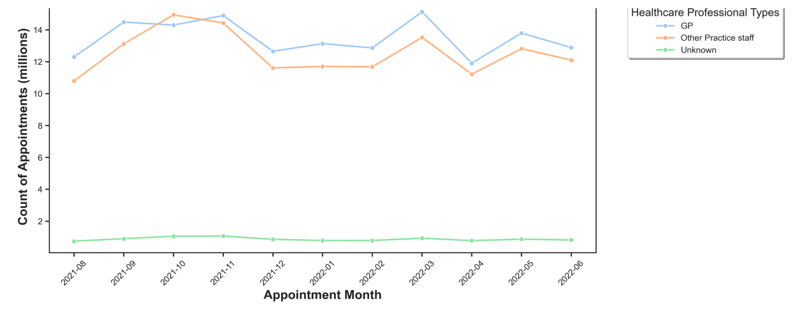

Core questionDid NHS BOB ICB’s 23.4% drop in appointments come from patients needing less care, or from less capacity to see them, and does it need more staff?
Business Context & Problem
Analysed NHS England’s national appointment data (Aug 2021–Jun 2022) to find out why NHS Buckinghamshire, Oxfordshire and Berkshire West (BOB) ICB saw a 23.4% drop in appointments between November 2021 and April 2022, and whether the answer was more staff or a different way of working.
Technical Execution & Tools Used
- Python (pandas) — loaded and sense-checked three NHS datasets (appointment durations, regional appointments and national categories), then aggregated and benchmarked BOB ICB against the ten highest-volume ICBs and the national average per 1,000 registered patients.
- matplotlib & seaborn — benchmark dumbbell chart, staff-type trend lines, and waiting-time mix over time.
- TextBlob — sentiment-scored a sample of healthcare-related tweets to test social media as an early-warning signal.
Key Insights
Top 5 of 21 findings
- Steepest decline: BOB ICB’s 23.4% drop from November 2021 to April 2022 was the largest among the ten highest-volume ICBs, about 3 points worse than peers, whose drops averaged around 20%.
- Where the drop happened: same-day telephone appointments fell from about 210K to 180K, same-day face-to-face from 165K to 140K, and appointments booked 2–7 days ahead fell by around 30%.
- Staff capacity fell together: GP appointments fell 22.8% and Other Practice Staff 25.2% between November and April, while their share of the total barely moved, so patient behaviour did not change.
- Cuts may not have been needed: national appointments rose again in May 2022, so reducing capacity may not suit demand over the longer term.
- Planned procedures sit in six ICBs: the top 6 ICBs account for 80% of Planned Clinical Procedures nationally, so a policy change there would be felt across England.
See all insights (16 more)Hide extra insights
01National demand: a clear seasonal cycle
- Peak in November: November 2021 was the busiest month (30.4M appointments), just ahead of October (30.3M). The quietest were August 2021 and April 2022, at about 23.9M each.
- Same shape everywhere: most appointment categories rose from August to a November peak, dropped sharply in December, climbed again to March, then fell sharply in April 2022.
- Never back to peak: in November 2021 daily appointments reached about 90% of the NHS planning guideline of 1.2M a day. Usage never returned to that level, and April 2022 was the low point.
- Scale: the data covers 106 sub-ICB locations. The five busiest were North West London (6.98M), North East London (5.34M), Kent and Medway (5.21M), Hampshire and Isle of Wight (4.71M) and South East London (4.36M).
02Where appointments concentrate
- One ICB drives Planned Clinics: North West London accounts for almost 31% of all Planned Clinics. Checking against registered patients showed this is real, not duplicate rows: it has the largest patient base.
- Care Home Rounds rising everywhere: the only category with a steady upward trend, and spread thinly (the top ICB holds just 4.34%, the top five about 18%, across 103 ICBs). A national rise like this may reflect a change in how activity is recorded.
- Unmapped is a big category: in North West London (Jan–Jun 2022) General Practice led with 4.80M appointments, but “Unmapped” came second with 391K, a clear data-quality signal.
03BOB ICB deep dive
- Lost capacity share: measured against the 1.2M-a-day guideline, BOB ICB lost about 0.61% of national daily capacity, more than similar-sized peers E54000051 and E54000052 (0.54% and 0.53%).
- Different service mix: BOB ICB records far fewer Planned Clinics than England (4.83% vs 9.46%) but more Planned Clinical Procedures (12.31% vs 8.68%).
- Below the national rate: BOB ICB records 4.6% fewer appointments per registered patient than the national average.
04Supply, not demand
- Stable booking pattern: same-day appointments held at about 46% of the total in every month, so the booking system stayed reactive by design rather than breaking down.
- Timing points to funding: the drop followed the end of the 2021–22 financial year in March, which suggests a funding effect rather than lower need. This is a hypothesis the data cannot confirm.
05Social media as a data source
- Very low engagement: 526 tweets in the sample had no retweets and 1,027 had no likes; most had fewer than 5 reactions.
- Generic hashtags dominate: #healthcare appeared 716 times. After grouping similar tags, health-related tags led with 1,180 uses, far ahead of #tech (179) and #pharma (105).
- Mildly positive, mostly opinion: average polarity was 0.17 and subjectivity 0.33. 208 tweets were highly emotional or personal, against only 13 factual complaints.
- Barely about the NHS: only one tweet in the sample was about the NHS, so this data cannot work as an early-warning signal.



Core diagnostic — did the mix of appointments shift, or just the volume?
ar_44_hcp_test = ar_44_hcp.groupby(['hcp_type', 'appointment_month'])['count_of_appointments'].sum().reset_index()
ar_44_hcp_test_pivot = (
ar_44_hcp_test.pivot(index='hcp_type', columns='appointment_month', values='count_of_appointments')
.rename(columns={'2021-11': 'Nov 2021', '2022-04': 'Apr 2022'})
.reset_index()
)
ar_44_hcp_test_pivot['Appointments Drop %'] = (
(ar_44_hcp_test_pivot['Nov 2021'] - ar_44_hcp_test_pivot['Apr 2022'])
/ ar_44_hcp_test_pivot['Nov 2021'] * 100
).round(2)
share_nov = ar_44_hcp_test_pivot['Nov 2021'] / ar_44_hcp_test_pivot['Nov 2021'].sum() * 100
share_apr = ar_44_hcp_test_pivot['Apr 2022'] / ar_44_hcp_test_pivot['Apr 2022'].sum() * 100
ar_44_hcp_test_pivot['Share Shift (pp)'] = share_apr - share_nov
# -> GP -22.8%, Other Practice Staff -25.2%, but the share barely moved:
# both fell together, so this reads as a supply-side cut, not a change in patient mix.Data validation: is North West London’s 31% share of Planned Clinics real, or duplicate rows?
row_counts = (nc_clinics_2[nc_clinics_2['national_category'] == 'Planned Clinics']
.groupby('sub_icb_location_name')
.agg(row_count=('count_millions', 'count'),
total_appointments=('count_millions', 'sum'),
avg_per_row=('count_millions', 'mean'))
.sort_values('total_appointments', ascending=False))
# Normalise by population before calling anything an outlier
patients_merge['appts_per_1000'] = (
patients_merge['count_of_appointments'] / patients_merge['NUMBER_OF_PATIENTS'] * 1000)
# -> Not duplicates: NW London simply has the largest registered patient base.Benchmark: BOB ICB appointments per 1,000 registered patients vs England
national_appts = nc['count_of_appointments'].sum()
national_patients = patients['NUMBER_OF_PATIENTS'].sum()
national_rate = round(national_appts / national_patients * 1000, 1)
bob_total_patients = ad44_ons_code['NUMBER_OF_PATIENTS'].sum()
bob_rate = round(bob_total_appts / bob_total_patients * 1000, 1)
gap_pct = round((bob_rate - national_rate) / national_rate * 100, 1)
# -> BOB ICB records 4.6% fewer appointments per registered patient than the national averageRecommendations
- Make better use of existing capacity before hiring. GP and other practice staff appointments fell together while the patient mix stayed flat, so the gap is in capacity used, not in demand.
- Start with the booking system. Same-day bookings held at about 46% of the total every month, which shows a reactive system by design and the natural place to redesign.
- Set a target to close the gap to the national average. BOB ICB would need roughly 237 more appointments per 1,000 patients to match England, a clear and trackable goal.
- Clean up “Unmapped” and “Inconsistent Mapping” records. Appointments that are not classified properly hide where capacity goes and make the ICB harder to compare with its peers.
- Send automated appointment reminders. Reminders are a low-cost way to cut non-attendance and get more out of appointments that already exist.
- Benchmark against similar-sized peers. E54000051 and E54000052 had similar capacity to BOB ICB in November but lost less of the national share by April, so they are the first places to compare working practices.
- Check the low share of Planned Clinics. BOB ICB records 4.83% of appointments as Planned Clinics against 9.46% nationally, and more Planned Clinical Procedures (12.31% vs 8.68%), which may be a recording difference rather than a service one.
- Move to longer, more flexible contracts. The drop came across almost all ICBs after the financial year ended, so planning capacity on longer, flexible contracts rather than short fixed-term ones would be more sustainable.
Data Quality & Limitations
- Sense-checked first: all three datasets were checked for missing values and data types, and North West London’s 31% share of Planned Clinics was validated against registered patients rather than dismissed as duplicates.
- Unclassified records: a noticeable share of appointments sits under the “Unmapped” service setting, which limits how precisely capacity can be attributed.
- No reasons for missed appointments: none of the datasets record why appointments are missed, or any symptom or condition data, so non-attendance cannot be traced to its causes.
- Daily figures are estimates: daily utilisation was approximated as monthly totals divided by 30, then compared with the 1.2M-a-day planning guideline.
- Short time window: 11 months of data (Aug 2021–Jun 2022) is not enough to separate seasonal patterns from one-off effects.
- Possible reporting effects: the steady national rise in Care Home Round appointments may reflect changes in how activity is recorded rather than in demand.
View full Python notebook
# NHS primary care appointments: capacity and utilisation analysis
# Author: Lan Ngoc Mau
# Tools: Python (pandas, NumPy, Matplotlib, Seaborn, TextBlob)
#
# Business question: does the NHS need more staff and capacity, or can it make
# better use of what it has? This script explores GP appointment data
# (Aug 2021 to Jun 2022), finds monthly and seasonal patterns, investigates
# outlier ICBs, analyses healthcare-related tweets, and compares utilisation
# against the NHS planning benchmark of 1.2 million appointments per day.
#
# Data files expected in the working directory (not included in this repo):
# actual_duration.csv, appointments_regional.csv, national_categories.xlsx, tweets.csv,
# gp-reg-pat-prac-all.csv (NHS Digital registered patients by practice)
#
# Exported from a Jupyter notebook: lines starting with "# " were markdown cells.
# # 1. Planning the approach
# ##### Current Situation
# - Refine business questions to actionable analytic question
# - NHS need to expand its infrastructure and resources to match with increasing population capacity -> utilisation trends of each component it its network.
# ##### Contrast opinions about the utilisation of NHS resources
# - NHS's capacity is not enough to cope with current situation
# - The current trends in utilisation shows no need to put more effort in making better use of existing infrastructure and resources.
# ##### The missed appointments needs to be scrutinized and the aim to reducing or eliminating them
# - Has there been adequate staff and capacity in the networks?
# - What was the actual utilisation of resources?
# #### Questions to guide initial thoughts
# - The population is increasing -> more people in need of NHS services -> however why more missed appointments -> doesnt fully reflect the whole situation.
# - Numbers and appointments and records per month?
# - Reasons for cancelling appointments: got an appointment way too far from their expected date -> no use to see doctor because they might already recover until the appointment?
# - How many locations are there?
# - 5 locations with highest number of appointments?
# - How many service settings, context types, national categories, number of appointments?
# ##### Lead time between calling and getting an appointment: lead time for each category of symptoms
# ##### What symptoms that people tend to skip appointments/ any similar patterns/group?
# - Any others reasons that might contribute to this: number of locations/ monthly and seasonal trends based on number of appointments for service settings, context types, national categories?
# - What can be learnt from interpreting opinions from Twitter? Do they all tell us the same thing? Do customers provide their reason behind missed appointments?
# - What can top trending hashtag on twitter tell about? will it help the decision making process?
# - Patterns in people tend to have more appointments than others? Will they cancel more than others
# - Patterns in people tend to not show up? Were it symptoms/illness categories related or any other factors?
# - Conversion rate between "Booked" to "Attended/Unknown/DNA": any patterns?
# #### -> Try to gain more insights by looking at patterns
# #### Recommendations:
# - How to utilise staff when patients missed appointments? What would nurses/doctors do in case their patients do not show up? Is there anything they can work on?
# # 2. Data import, cleaning and first exploration
# ### Prepare your workstation
# Import the necessary libraries.
import pandas as pd
import numpy as np
import seaborn as sns
import matplotlib.pyplot as plt
# Optional - Ignore warnings.
import warnings
warnings.filterwarnings('ignore')
# Import and sense-check the actual_duration.csv data set as ad.
ad = pd.read_csv('actual_duration.csv')
# View the DataFrame.
ad
# Determine whether there are missing values.
ad_na = ad[ad.isna().any(axis=1)]
ad_na
# Confirm whether no missing values
ad.isna().sum()
# Determine the metadata of the data set.
type(ad)
# Describe the dataset
ad.info()
# Change the datatype of appointment_date
ad['appointment_date'] = pd.to_datetime(ad['appointment_date'])
ad.dtypes
# Print the DataFrame
ad
# Rows and columns count
ad.shape
# Determine the descriptive statistics of the data set.
ad.describe()
# Import and sense-check the appointments_regional.csv data set as ar.
ar = pd.read_csv('appointments_regional.csv')
# View the DataFrame.
ar
# Determine whether there are missing values.
ar_na = ar[ar.isna().any(axis=1)]
ar_na
# Confirm whether no missing values
ar.isna().sum()
# Determine the metadata of the data set.
type(ar)
# Describe the dataset
ar.info()
# Determine the descriptive statistics of the data set.
ar.describe()
# Import and sense-check the national_categories.xlsx data set as nc.
nc = pd.read_excel('national_categories.xlsx')
# View the DataFrame.
nc.head()
# Determine whether there are missing values.
nc_na = nc[nc.isna().any(axis=1)]
nc_na
# Confirm whether no missing values
nc.isna().sum()
# Describe the dataset
nc.info()
# Determine the metadata of the data set.
type(nc)
# Check the dtype
nc.dtypes
# Determine the descriptive statistics of the data set.
nc.describe()
# ### Explore the data set
# **Question 1:** How many locations are there in the data set?
# Get column names
list(ad.columns)
# Determine the number of locations.
ad['sub_icb_location_name'].value_counts()
# Confirm number of locations.
ad['sub_icb_location_code'].value_counts()
# **Question 2:** What are the five locations with the highest number of appointments?
# Creating a new dataframe for easy analysis without changing the original one
ad1 = pd.DataFrame(ad, columns = ['sub_icb_location_name', 'count_of_appointments'])
ad1
# Determine the top five locations based on record count.
ad1_sorted = ad1.groupby('sub_icb_location_name')['count_of_appointments']\
.sum()\
.sort_values(ascending=False)\
.head()
ad1_sorted.head()
# **Question 3:** How many service settings, context types, national categories, and appointment statuses are there?
# Determine the number of service settings
nc['service_setting'].value_counts()
# Determine the number of context types.
nc['context_type'].value_counts()
# Determine the number of national categories.
nc['national_category'].value_counts()
# Determine the number of appointment statuses.
ar['appointment_status'].value_counts()
# #
# # 3. Answering specific questions about appointments
# **Question 1:** Between what dates were appointments scheduled?
# View the first five rows of appointment_date for the ad DataFrame to determine the date format.
ad['appointment_date'].head()
# View the first five rows of appointment_date for the nc DataFrame to determine the date format.
nc['appointment_date'].head()
# Determine the minimum and maximum dates in the ad DataFrame.
ad['appointment_date'].agg(['min', 'max'])
# Format the datatype of appointment_date column
nc['appointment_date']= pd.to_datetime(nc['appointment_date'])
# Determine the minimum and maximum dates in the nc DataFrame.
nc['appointment_date'].agg(['min', 'max'])
# **Question 2:** Which service setting was the most popular for NHS North West London from 1 January to 1 June 2022?
# Create a subset of the nc DataFrame
nc_subset = nc[nc['sub_icb_location_name'] == 'NHS North West London ICB - W2U3Z']
nc_subset
# Specify the date of appointments from 1 January 2022 to 1 June 2022
nc_subset = nc_subset[nc_subset['appointment_date'].between('2022-01-01', '2022-06-01')]
nc_subset
# For each of these service settings, determine the number of records available for the period and the location.
nc_subset['service_setting'].value_counts()
# View the output.
print(nc_subset['service_setting'].value_counts())
# Count number of appointments with each service setting
nc_subset_appointments1 = nc_subset.groupby('service_setting')[['count_of_appointments']]
# View the output
nc_subset_appointments1.sum().sort_values(by='count_of_appointments', ascending=False)
# **Question 3:** Which month had the highest number of appointments?
# Number of appointments per month == sum of count_of_appointments by month.
monthly_appointments = nc['count_of_appointments'].groupby([nc['appointment_date'].dt.year.rename('Year'),
nc['appointment_date'].dt.month.rename('Month')])
monthly_appointments
# Use the groupby() and sort_values() functions.
monthly_appointments.sum().sort_values(ascending=False)
# **Question 4:** What was the total number of appointments per month?
# Total number of records per month.
total_monthly_appointments = pd.DataFrame(monthly_appointments.sum().sort_values(ascending=False))
total_monthly_appointments
# # 4. Monthly and seasonal trends
# ### Create visualisations and identify possible monthly and seasonal trends in the data.
# Import the necessary libraries.
import seaborn as sns
import matplotlib.pyplot as plt
import matplotlib.dates as mdates
# Set figure size.
sns.set(rc={'figure.figsize':(15, 12)})
# Set the plot style as white.
sns.set_style('white')
# ### Objective 1
# Create three visualisations indicating the number of appointments per month for service settings, context types, and national categories.
# Creating a new nc subset to use for analysis without changing the original nc dataset
nc_copy = nc
nc_copy
# Change the datatype of the appointment date to string to allow for easier plotting.
nc_copy['appointment_date']= pd.to_datetime(nc_copy['appointment_date']).dt.strftime('%Y-%m-%d')
print(nc_copy.dtypes)
# Adding new columns as count_millions for appointment counts
nc_copy['count_millions']= nc_copy['count_of_appointments']/1_000_000
nc_copy
# Aggregate on service setting and determine the sum of records per month.
nc_copy.groupby('service_setting')[['count_of_appointments']]
# View output.
nc_copy.groupby('service_setting')[['count_of_appointments']].sum().sort_values(by='count_of_appointments', ascending=False)
# Aggregate on monthly level and determine the sum of records per month.
nc_copy.groupby(['appointment_month'])[['count_of_appointments']].sum().sort_values(by='count_of_appointments', ascending=False)
# Aggregate on monthly level and determine the sum of records per month - count by millions
nc_monthly = nc_copy.groupby(['appointment_month','service_setting'])[['count_millions']].sum()
nc_monthly
# **Service settings:**
# Plot the appointments over the available date range, and review the service settings for months.
# Create a lineplot.
fig, ax = plt.subplots()
fig.set_size_inches(10,6)
# Plot data
sns.lineplot(x='appointment_month', y='count_millions', hue='service_setting', data=nc_monthly,
errorbar=None, linewidth=2, marker='o', ax=ax)
# Adding title and labels
ax.set_title('Appointments Over Time by Service Setting', fontsize= 20, fontweight='bold')
ax.set_xlabel('Appointment Month', fontsize= 16, fontweight='bold')
ax.set_ylabel('Count of Appointments (millions)',fontsize= 16, fontweight='bold')
# Adding tick marks
ax.tick_params(axis='x', which='major', bottom=True,
length=5, width=1.5, rotation=45)
ax.tick_params(axis='y', which='major', left=True,
length=5, width=1.5)
# Adding legend
plt.legend(title='Service Setting', bbox_to_anchor=(1.05, 1),
title_fontsize= 14, frameon=True, shadow=True)
# Plot figure
plt.tight_layout()
plt.savefig('appointments_by_service_setting.png', dpi=300)
plt.show()
# **Context types:**
# Create a separate data set that can be used in future weeks.
context_monthly= nc_copy.groupby(['context_type','appointment_month'])[['count_millions']].sum()
# View output.
context_monthly
# Plot the appointments over the available date range, and review the context types for months.
# Create a lineplot.
fig, ax = plt.subplots()
fig.set_size_inches(10,6)
# Plot data
sns.lineplot(x='appointment_month', y='count_millions', hue='context_type', data=context_monthly,
errorbar=None, linewidth=2, marker='o', ax=ax)
# Adding title and labels
ax.set_title('Appointments Over Time by Context Type', fontsize= 20, fontweight='bold')
ax.set_xlabel('Appointment Month',fontsize= 16, fontweight='bold')
ax.set_ylabel('Count of Appointments (millions)',fontsize= 16, fontweight='bold')
# Adding tick marks
ax.tick_params(axis='x', which='major', bottom=True,
length=5, width=1.5, rotation=45)
ax.tick_params(axis='y', which='major', left=True,
length=5, width=1.5)
# Adding legend
plt.legend(title='Context Type', bbox_to_anchor=(1.05, 1),
title_fontsize= 14, frameon=True, shadow=True)
# Plot figure
plt.tight_layout()
plt.savefig('appointments_by_context_type.png', dpi=300)
plt.show()
# **National categories:**
# Create a separate data set that can be used in future weeks.
national_categories= nc_copy.groupby(['appointment_month','national_category'])\
[['count_millions']]\
.sum()
# View output.
national_categories
# ### Extra steps:
# - As there are many categories in the national category, plotting them altogether without order would make it hard to follow
# -> Will create different variable to make arrange legends that can follow the order of each lineplot
# get the last value of each category
last_values = national_categories.groupby('national_category')\
['count_millions']\
.last().sort_values(ascending=False)
last_values
all_categories = last_values.index.tolist()
all_categories
# Plot the appointments over the available date range, and review the national categories for months.
# Adding more color options for better visualisation
import matplotlib.cm as cm
colors = cm.tab20.colors
# Create a lineplot.
fig, ax = plt.subplots()
fig.set_size_inches(16,10)
# Plot data
sns.lineplot(x='appointment_month', y='count_millions', hue='national_category',
hue_order=all_categories, # control legend order
data=national_categories,
errorbar=None,
linewidth=2, marker='o', ax=ax, palette= colors)
# Adding title and labels
ax.set_title('National Categories Over Time', fontsize= 20, fontweight='bold')
ax.set_xlabel('Appointment Month',fontsize= 16, fontweight='bold')
ax.set_ylabel('Count of Appointments (millions)',fontsize= 16, fontweight='bold')
# Adding tick marks
ax.tick_params(axis='x', which='major', bottom=True,
length=5, width=1.5, rotation=45)
ax.tick_params(axis='y', which='major', left=True,
length=5, width=1.5)
# Adding legend
plt.legend(bbox_to_anchor=(1.05, 1),
title='National Category', title_fontsize=16,
frameon=True, shadow=True)
# Plot figure
plt.tight_layout()
plt.savefig('appointments_by_national_category.png', dpi=300)
plt.show()
# #### As the above chart was overcrowded, decided to plot another chart that limits to 5 top categories
# Limited to top 7 National Categories
top7 = last_values.head(7).index.tolist()
top7
# Plot the appointments over the available date range, and review the national categories for months.
# Create a lineplot.
fig, ax = plt.subplots()
fig.set_size_inches(10,6)
# Plot data
sns.lineplot(x='appointment_month', y='count_millions', hue='national_category',
hue_order=top7, # control legend order
data=national_categories,
errorbar=None,
linewidth=2, marker='o', ax=ax, palette='Set2')
# Adding title and labels
ax.set_title('Top 7 National Categories Over Time', fontsize= 20, fontweight='bold')
ax.set_xlabel('Appointment Month',fontsize= 16, fontweight='bold')
ax.set_ylabel('Count of Appointments (millions)',fontsize= 16, fontweight='bold')
# Adding tick marks
ax.tick_params(axis='x', which='major', bottom=True,
length=5, width=1.5, rotation=45)
ax.tick_params(axis='y', which='major', left=True,
length=5, width=1.5)
# Adding legend
plt.legend(bbox_to_anchor=(1.05, 1),
title='National Category', title_fontsize=14,
frameon=True, shadow=True)
# Plot figure
plt.tight_layout()
plt.savefig('appointments_by_top 7_national_category.png', dpi=300)
plt.show()
# Filter the last 11 national categories
last11 = last_values.tail(11).index.tolist()
last11
# Plot the appointments over the available date range, and review the national categories for months.
# Create a lineplot.
fig, ax = plt.subplots()
fig.set_size_inches(16,8)
# Plot data
sns.lineplot(x='appointment_month', y='count_millions', hue='national_category',
hue_order=last11, # control legend order
data=national_categories,
errorbar=None,
linewidth=2, marker='o', ax=ax, palette='Set2')
# Adding title and labels
ax.set_title('11 Other National Categories Over Time', fontsize= 20, fontweight='bold')
ax.set_xlabel('Appointment Month',fontsize= 16, fontweight='bold')
ax.set_ylabel('Count of Appointments (millions)',fontsize= 16, fontweight='bold')
# Adding tick marks
ax.tick_params(axis='x', which='major', bottom=True,
length=5, width=1.5, rotation=45)
ax.tick_params(axis='y', which='major', left=True,
length=5, width=1.5)
# Adding legend
plt.legend(bbox_to_anchor=(1.05, 1),
title='National Category', title_fontsize=14,
frameon=True, shadow=True)
# Plot figure
plt.tight_layout()
plt.savefig('appointments_by_11_other_types_national_category.png', dpi=300)
plt.show()
# #### Key takeaways from above charts:
# - The majority of national category type appointments show the same pattern over the period: steady rise from August 2021 to November 2021 and reached their peak in November 2021, followed by a sharp drop in December 2021, then kept a steady rise until March 2022 before dropped sharply in April 2022.
# - Outliers that caught my attention:
# + Planned clinical procedure and planned clinics: all reached their top levels of appointments in October 2021
# + Patient contact during Care Home Round rise steadily over the time.
# -> Will take a look further into understanding these details
# #### Investigation into Planned Clinics and Planned Clinical Procedure
nc_clinics = nc[nc['national_category'].isin(['Planned Clinics', 'Planned Clinical Procedure'])]
nc_clinics
nc_clinics.columns.tolist()
nc_clinics['appointment_month']= pd.to_datetime(nc['appointment_month']).dt.strftime('%Y-%m')
# #### Finding which ICB drove the strange pattern in 2021-09 and 2021-10
nc_clinics_1 = nc_clinics.groupby(['appointment_month', 'sub_icb_location_name','national_category'])['count_millions'].sum().reset_index()
nc_clinics_1
spike_period = nc_clinics_1[nc_clinics_1['appointment_month'].isin(['2021-09', '2021-10'])]
top_icb_spike = spike_period.groupby('sub_icb_location_name')['count_millions']\
.sum()\
.sort_values(ascending=False).head(8)
top_icb_spike
# Create a DataFrame that includes all 8 sub-ICBs that got the most appointments in those 2 national category types
nc_clinics_2 = nc_clinics_1[nc_clinics_1['sub_icb_location_name'].isin(['NHS North West London ICB - W2U3Z', 'NHS Hampshire and Isle Of Wight ICB - D9Y0V',
'NHS Devon ICB - 15N', 'NHS Kent and Medway ICB - 91Q',
'NHS Norfolk and Waveney ICB - 26A', 'NHS North East London ICB - A3A8R',
'NHS Bedfordshire Luton and Milton Keynes ICB - M1J4Y', 'NHS Black Country ICB - D2P2L'])]
nc_clinics_2
# Step 1 — ensure appointment_month is string and count_millions exists
nc_clinics_2['appointment_month'] = nc_clinics_2['appointment_month'].astype(str)
# Step 2 — build ONE consistent palette from sorted ICB list
icb_list = sorted(nc_clinics_2['sub_icb_location_name'].unique())
palette = dict(zip(icb_list, sns.color_palette('tab10', len(icb_list))))
# Step 3 — plot
fig, axes = plt.subplots(1, 2, figsize=(20,10), sharey=False)
for ax, cat in zip(axes, ['Planned Clinics', 'Planned Clinical Procedure']):
subset = nc_clinics_2[nc_clinics_2['national_category'] == cat]
sns.lineplot(data=subset,
x='appointment_month',
y='count_millions',
hue='sub_icb_location_name',
palette=palette,
hue_order=icb_list,
marker='o',
ax=ax,
legend=False) # no per-axis legend
ax.set_title(cat, fontsize=14, fontweight='bold')
ax.set_xlabel('Month', fontsize=12, fontweight='bold')
ax.set_ylabel('Count (millions)', fontsize=12, fontweight='bold')
ax.tick_params(axis='x', rotation=45)
# Step 4 — single shared legend built manually from palette
from matplotlib.lines import Line2D
legend_handles = [
Line2D([0], [0], color=palette[icb], marker='o', linewidth=2, label=icb)
for icb in icb_list
]
fig.legend(handles=legend_handles,
bbox_to_anchor=(1.01, 0.5),
loc='center left',
title='ICB',
fontsize=9,
title_fontsize=10,
frameon=True,
shadow=True)
plt.suptitle('Top ICBs ',
fontsize=16, fontweight='bold', y=1.02)
plt.tight_layout()
plt.savefig('icb_regional_variation.png', dpi=300, bbox_inches='tight')
plt.show()
# Find the top ICBs with most appointments in Planned Clinics
planned_clinics = nc_clinics_2[nc_clinics_2['national_category'] == 'Planned Clinics']
top_planned_clinics = (planned_clinics.groupby('sub_icb_location_name')['count_millions']
.sum()
.sort_values(ascending=False))
total_planned_clinics = top_planned_clinics.sum()
top_planned_clinics_pct = top_planned_clinics.reset_index()
top_planned_clinics_pct.columns = ['sub_icb_location_name', 'count_millions']
top_planned_clinics_pct['percentage'] = (top_planned_clinics_pct['count_millions'] / total_planned_clinics * 100).round(2)
print(top_planned_clinics_pct.to_string(index=False))
# Test whether the spike is driven by NW London alone
without_nwl = nc_clinics_2[nc_clinics_2['sub_icb_location_name'] != 'NHS North West London ICB - W2U3Z']
clinics_no_nwl = (without_nwl[without_nwl['national_category'] == 'Planned Clinics']
.groupby('appointment_month')['count_millions']
.sum())
print(clinics_no_nwl)
# Find the top ICBs with most appointments in Planned Clinical Procedure with the percentage
procedure_clinics = nc_clinics_2[nc_clinics_2['national_category'] == 'Planned Clinical Procedure']
top_procedure_clinics = (procedure_clinics.groupby('sub_icb_location_name')['count_millions']
.sum()
.sort_values(ascending=False))
total = top_procedure_clinics.sum()
top_procedure_clinics_pct = top_procedure_clinics.reset_index()
top_procedure_clinics_pct.columns = ['sub_icb_location_name', 'count_millions']
top_procedure_clinics_pct['percentage'] = (top_procedure_clinics_pct['count_millions'] / total * 100).round(2)
print(top_procedure_clinics_pct.to_string(index=False))
# #### Insights from above charts and tables
# - Planned Clinical Procedure: all top 8 ICBs showed a similar pattern to the general pattern; this can be explained by the spike from August 2021 to October 2021 happening at a national level. The top 6 ICBs account for 80% of the whole nation, which means this type of appointment is fairly concentrated in 6 ICBs, and if the NHS wants to deploy a new policy, bringing changes to those 6 ICBS might result in a national effect.
# - Planned Clinics: 1 ICB account for almost 31% of all appointments across the whole country, while others ICB share the same patterns, this ICB shows a slightly different pattern with reaching its peak in November 2021
# Check if NW London has unusually high row counts vs other ICBs
row_counts = (nc_clinics_2[nc_clinics_2['national_category'] == 'Planned Clinics']
.groupby('sub_icb_location_name')
.agg(
row_count=('count_millions', 'count'),
total_appointments=('count_millions', 'sum'),
avg_per_row=('count_millions', 'mean')
)
.sort_values('total_appointments', ascending=False))
print(row_counts.head(10))
# #### Validating the information why NHS North West London ICB - W2U3Z got that amount of surprising high appointments
# Getting the sub_icb_location_ons_code from actual_duration dataset to link with another dataset
top8= ad[ad['sub_icb_location_name'].\
isin(['NHS North West London ICB - W2U3Z','NHS Bedfordshire Luton and Milton Keynes ICB - M1J4Y ',
'NHS Norfolk and Waveney ICB - 26A', 'NHS Hampshire and Isle Of Wight ICB - D9Y0V',
'NHS Devon ICB - 15N', 'NHS North East London ICB - A3A8R',
'NHS Black Country ICB - D2P2L','NHS Kent and Medway ICB - 91Q'])]
top8
top_icbs=top8.groupby(['sub_icb_location_name', 'sub_icb_location_ons_code'])['count_of_appointments'].sum().reset_index()
top_icbs
top_icbs['sub_icb_location_ons_code'].tolist()
# Getting number of patients from these 8 top ICBs
patients=pd.read_csv('gp-reg-pat-prac-all.csv')
patients
patients_top8= patients[patients['ONS_SUB_ICB_LOCATION_CODE'].isin(['E38000259',
'E38000230',
'E38000253',
'E38000237',
'E38000239',
'E38000255',
'E38000256'])]
patients_group=patients_top8.groupby('ONS_SUB_ICB_LOCATION_CODE')['NUMBER_OF_PATIENTS'].sum().reset_index()
patients_group= patients_group.rename(columns={'ONS_SUB_ICB_LOCATION_CODE':'sub_icb_location_ons_code'})
patients_group
patients_merge= pd.merge(patients_group, top_icbs, on='sub_icb_location_ons_code', how='outer')
patients_merge.sort_values(by='NUMBER_OF_PATIENTS', ascending=False)
# Calculating appointments per 1000 registered patients:
patients_merge['appts_per_1000'] = (
(patients_merge['count_of_appointments'] / patients_merge['NUMBER_OF_PATIENTS']) * 1000
).round(1)
patients_merge.sort_values(by='count_of_appointments', ascending=False)
# Plot the figure
ig, ax = plt.subplots(figsize=(12, 6))
colors = ['red' if 'W2U3Z' in str(x) else 'steelblue'
for x in patients_merge['sub_icb_location_name']]
ax.barh(patients_merge['sub_icb_location_name'],
patients_merge['appts_per_1000'],
color=colors)
# Adding title and label
ax.set_xlabel('Appointments per 1,000 Registered Patients', fontsize=12)
ax.set_title('Planned Clinics: Appointments per 1,000 Patients by ICB\n(red = potential outlier)',
fontsize=14, fontweight='bold')
ax.legend()
plt.tight_layout()
plt.savefig('appts_per_1000_patients.png', dpi=300, bbox_inches='tight')
plt.show()
# #### Key takeaway:
# - NHS North West London ICB - W2U3Z does not appear as an outlier due to data duplicates - it has the largest registered patient base compared to other ICBs, that's why it accounts for 31% in the planned clinics appointments in the whole nation.
# - Any change to this ICB planned clinics appointments type can have a big effect on the whole nation' planned clinics performance.
# #### Patient Care Home Round
# This national category type is currently showing a completely contrast pattern compared to other types - a steady clear rising trend.
# -> Decided to investigate this a bit further
# Extracting a new dataset dedicated to Patient Care Home Round
care_home = nc[nc['national_category'] == 'Patient contact during Care Home Round']
care_home
# Take a look at which service settings are driving the growth?
care_home_service= care_home.groupby(['service_setting','appointment_month'])['count_millions'].sum().reset_index()
care_home_service
# Plot the appointments over the available date range, and review the national categories for months.
# Adding more color options for better visualisation
import matplotlib.cm as cm
colors = cm.tab20.colors
# Create a lineplot.
fig, ax = plt.subplots()
fig.set_size_inches(16,10)
# Plot data
sns.lineplot(x='appointment_month', y='count_millions', hue='service_setting',
data=care_home_service,
errorbar=None,
linewidth=2, marker='o', ax=ax, palette= colors)
# Adding title and labels
ax.set_title('Service Settings Appointments in Patient Care Home Round', fontsize= 20, fontweight='bold')
ax.set_xlabel('Appointment Month',fontsize= 16, fontweight='bold')
ax.set_ylabel('Count of Appointments (millions)',fontsize= 16, fontweight='bold')
# Adding tick marks
ax.tick_params(axis='x', which='major', bottom=True,
length=5, width=1.5, rotation=45)
ax.tick_params(axis='y', which='major', left=True,
length=5, width=1.5)
# Adding legend
plt.legend(bbox_to_anchor=(1.05, 1),
title='Service Settings', title_fontsize=16,
frameon=True, shadow=True)
# Plot figure
plt.tight_layout()
plt.savefig('service_setting_care_home.png', dpi=300)
plt.show()
# Take a look at ICBs were driving the growth?
care_home_icb = (care_home.groupby(['appointment_month', 'sub_icb_location_name'])
['count_of_appointments'].sum()
.reset_index())
care_home_icb.sort_values(by='count_of_appointments', ascending=False)
care_home_icb_total = pd.DataFrame(care_home_icb.groupby('sub_icb_location_name')['count_of_appointments'].sum().reset_index())
care_home_icb_total.sort_values(by=['count_of_appointments'], ascending=False)
# Add percentage column to see the proportion of each ICB
total = care_home_icb_total['count_of_appointments'].sum()
care_home_icb_total['percentage'] = (
(care_home_icb_total['count_of_appointments'] / total) * 100
).round(2)
care_home_icb_total.sort_values(by='count_of_appointments', ascending=False)
# ### Key takeaways:
# - General Practice and Primary Care Network is striking ahead.
# - Extended Access Provision and Other are negligible and flat
# - Activity is extremely fragmented — the top ICB (Hampshire) accounts for only 4.34%, and the top 5 combined account for roughly 18%. Across 103 ICBs, no single region dominates
# -> The change in Patient Care Home Round happened in a national level, and not just limited to any particular ICBs. This might not entirely suggest that the patients in need of care home services were growing rapidly? Is this something related to the different way of reporting in the NHS system/ how the data was collected also needed to investigate a bit further. If this is soemthing related to how the data was collected, would it be worth it to apply new data collection method to other service settings to improve data collection accuracy?
# ### Objective 2
# Create four visualisations indicating the number of appointments for service setting per season. The seasons are summer (August 2021), autumn (September to November 2021), winter (December to February 2022), and spring (March to May 2022).
# **Summer (August 2021):** as the data in nc dataset only started from August 2021
# Create a separate data set that can be used in future weeks.
nc_summer2021= nc_copy[nc_copy['appointment_month']== '2021-08']
# View output.
nc_summer2021
nc_summer2021.dtypes
# Requires: pip install holidays
# Filter to all business days in a month, excluding weekends and holidays if possible.
# This aims to provide a better presentation of data.
# Create a holiday list.
import holidays
# get UK holidays automatically
uk_holidays = holidays.country_holidays('GB', subdiv='ENG',
years=[2021, 2022])
# convert to list
my_holiday_list = [str(d) for d in uk_holidays.keys()]
print(my_holiday_list)
# Filter to all business days in a month, excluding weekends and holidays if possible.
# This aims to provide a better presentation of data.
# Create a reusable function.
def business_days(start_date, end_date):
""" Excluding weekends and holidays in any datasets to provide better presentation of data
Input: df, start and end date strings
Output: dataframe with weekdays only"""
# write a code to excludes weekends and holidays:
bdays= pd.bdate_range(start=start_date, end=end_date,
freq='C', holidays=my_holiday_list)
# Return a list of dates as business days
return bdays.strftime('%Y-%m-%d').tolist()
# Test if the function works
august_bdays= business_days('2021-08-02', '2021-08-31')
print(august_bdays)
# Use business_days as a filter
nc_summer2021_sub= nc_summer2021[nc_summer2021['appointment_date'].isin(august_bdays)]
nc_summer2021_sub
# Create a separate data set that can be used in future weeks.
summer_2021= nc_summer2021_sub.groupby(['service_setting','appointment_date'])\
[['count_millions']].sum().reset_index()
# View output.
summer_2021
# Look at August 2021 in more detail to allow a closer look.
summer_2021['appointment_date'] = pd.to_datetime(summer_2021['appointment_date'])
# Create a lineplot.
fig, ax = plt.subplots()
fig.set_size_inches(12,8)
# Plot data
sns.lineplot(x='appointment_date', y='count_millions', hue='service_setting',
data= summer_2021,
errorbar=None, linewidth=2, marker='o',
palette='colorblind',ax=ax)
# Adding the weekly tick marks- Mondays with labels
ax.xaxis.set_major_locator(mdates.WeekdayLocator(byweekday=mdates.MO))
ax.xaxis.set_major_formatter(mdates.DateFormatter("%Y-%m-%d"))
# Adding tick parameters
ax.tick_params(axis='x',which='major',bottom=True,
length=5,width=1.5, rotation=45)
ax.tick_params(axis='y', which='major', left=True,
length=5, width=1.5)
# Adding title and labels
ax.set_title('Appointments in August 2021 by Service Setting', fontsize= 20, fontweight='bold')
ax.set_xlabel('Appointment Date', fontsize= 16, fontweight='bold')
ax.set_ylabel('Count of Appointments (millions)',fontsize= 16, fontweight='bold')
# Adding legend
plt.legend(title='Service Setting', bbox_to_anchor=(1.05, 1),
title_fontsize= 14, frameon=True, shadow=True)
# Plot the figure
plt.tight_layout()
plt.savefig('appointments_by_service_setting_August2021.png', dpi=300, bbox_inches='tight')
plt.show()
# **Autumn (September to November 2021):**
# Look at September to November 2021 in more detail to allow a closer look.
nc_autumn2021= nc_copy[nc_copy['appointment_month'].isin(['2021-09', '2021-10', '2021-11'])]
nc_autumn2021
# Filter out business days in Autumn 2021
autumn_bdays= business_days('2021-09-01', '2021-11-30')
print(autumn_bdays)
# Use business_days as a filter
nc_autumn2021_sub= nc_autumn2021[nc_autumn2021['appointment_date'].isin(autumn_bdays)]
nc_autumn2021_sub
# Create a separate data set that can be used in future weeks.
autumn_2021= nc_autumn2021_sub.groupby(['service_setting','appointment_date'])\
[['count_millions']].sum().reset_index()
# View output.
autumn_2021
# Look at Sep to Nov 2021 in more detail to allow a closer look.
autumn_2021['appointment_date'] = pd.to_datetime(autumn_2021['appointment_date'])
# Create a lineplot.
fig, ax = plt.subplots()
fig.set_size_inches(12,8)
# Plot data
sns.lineplot(x='appointment_date', y='count_millions', hue='service_setting',
data= autumn_2021,
errorbar=None, linewidth=2, marker='o',
palette='colorblind',ax=ax)
# Adding the weekly tick marks- Mondays with labels
ax.xaxis.set_major_locator(mdates.WeekdayLocator(byweekday=mdates.MO))
ax.xaxis.set_major_formatter(mdates.DateFormatter("%Y-%m-%d"))
# Adding tick parameters
ax.tick_params(axis='x',which='major',bottom=True,
length=5,width=1.5, rotation=45)
ax.tick_params(axis='y', which='major', left=True,
length=5, width=1.5)
# Adding title and labels
ax.set_title('Appointments in Autumn 2021 by Service Setting', fontsize= 20, fontweight='bold')
ax.set_xlabel('Appointment Date', fontsize= 16, fontweight='bold')
ax.set_ylabel('Count of Appointments (millions)',fontsize= 16, fontweight='bold')
# Adding legend
plt.legend(title='Service Setting', bbox_to_anchor=(1.05, 1),
title_fontsize= 14, frameon=True, shadow=True)
# Plot figure
plt.tight_layout()
plt.savefig('appointments_by_service_setting_Autumn2021.png', dpi=300)
plt.show()
# **Winter (December to February 2022):**
# Look at December 2021 to February 2022 in more detail to allow a closer look.
nc_winter2021= nc_copy[nc_copy['appointment_month'].isin(['2021-12', '2022-01', '2022-02'])]
nc_winter2021
# Filter out business days in Winter
winter_bdays= business_days('2021-12-01', '2022-02-28')
print(winter_bdays)
# Use business_days as a filter
nc_winter2021_sub= nc_winter2021[nc_winter2021['appointment_date'].isin(winter_bdays)]
nc_winter2021_sub
# Create a separate data set that can be used in future weeks.
winter_2021= nc_winter2021_sub.groupby(['service_setting','appointment_date'])\
[['count_millions']].sum().reset_index()
# View output.
winter_2021
# Look at December to February 2022 in more detail to allow a closer look.
winter_2021['appointment_date']= pd.to_datetime(winter_2021['appointment_date'])
# Create a lineplot.
fig, ax = plt.subplots()
fig.set_size_inches(12,8)
# Plot data
sns.lineplot(x='appointment_date', y='count_millions', hue='service_setting',
data= winter_2021,
errorbar=None, linewidth=2, marker='o',
palette='colorblind',ax=ax)
# Adding the weekly tick marks- Mondays with labels
ax.xaxis.set_major_locator(mdates.WeekdayLocator(byweekday=mdates.MO))
ax.xaxis.set_major_formatter(mdates.DateFormatter("%Y-%m-%d"))
# Adding tick parameters
ax.tick_params(axis='x',which='major',bottom=True,
length=5,width=1.5, rotation=45)
ax.tick_params(axis='y', which='major', left=True,
length=5, width=1.5)
# Adding title and label
ax.set_title('Appointments in Winter 2021 by Service Setting', fontsize= 20, fontweight='bold')
ax.set_xlabel('Appointment Date', fontsize= 16, fontweight='bold')
ax.set_ylabel('Count of Appointments (millions)',fontsize= 16, fontweight='bold')
# Adding legend
plt.legend(title='Service Setting', bbox_to_anchor=(1.05, 1),
title_fontsize= 14, frameon=True, shadow=True)
# Plot figure
plt.tight_layout()
plt.savefig('appointments_by_service_setting_Winter 2021.png', dpi=300)
plt.show()
# **Spring (March to May 2022):**
nc_spring2022= nc_copy[nc_copy['appointment_month'].isin(['2022-03', '2022-04', '2022-05'])]
nc_spring2022
# Filter out business days in Winter
spring_bdays= business_days('2022-03-01', '2022-05-31')
print(spring_bdays)
# Use business_days as a filter
nc_spring2022_sub= nc_spring2022[nc_spring2022['appointment_date'].isin(spring_bdays)]
nc_spring2022_sub
# Create a separate data set that can be used in future weeks.
spring_2022= nc_spring2022_sub.groupby(['service_setting','appointment_date'])\
[['count_millions']].sum().reset_index()
# View output.
spring_2022
# Look at March to May 2022 in more detail to allow a closer look.
spring_2022['appointment_date']= pd.to_datetime(spring_2022['appointment_date'])
# Create a lineplot.
fig, ax = plt.subplots()
fig.set_size_inches(12,8)
# Plot data
sns.lineplot(x='appointment_date', y='count_millions', hue='service_setting',
data= spring_2022,
errorbar=None, linewidth=2, marker='o',
palette='colorblind',ax=ax)
# Adding the weekly tick marks- Mondays with labels
ax.xaxis.set_major_locator(mdates.WeekdayLocator(byweekday=mdates.MO))
ax.xaxis.set_major_formatter(mdates.DateFormatter("%Y-%m-%d"))
# Adding tick parameters
ax.tick_params(axis='x',which='major',bottom=True,
length=5,width=1.5, rotation=45)
ax.tick_params(axis='y', which='major', left=True,
length=5, width=1.5)
# Adding title and label
ax.set_title('Appointments in Spring 2022 by Service Setting', fontsize= 20, fontweight='bold')
ax.set_xlabel('Appointment Date', fontsize= 16, fontweight='bold')
ax.set_ylabel('Count of Appointments (millions)',fontsize= 16, fontweight='bold')
# Adding legend
plt.legend(title='Service Setting', bbox_to_anchor=(1.05, 1),
title_fontsize= 14, frameon=True, shadow=True)
# Plot the figure
plt.tight_layout()
plt.savefig('appointments_by_service_setting_Spring_2022.png', dpi=300)
plt.show()
# #
# # 5. Social media (Twitter/X) analysis
# ### Analyse tweets from Twitter with hashtags related to healthcare in the UK.
# Libraries and settings needed for analysis
import pandas as pd
import seaborn as sns
# Set figure size.
sns.set(rc={'figure.figsize':(15, 12)})
# Set the plot style as white.
sns.set_style('white')
# Maximum column width to display
pd.options.display.max_colwidth = 200
# Load the data set.
tweets = pd.read_csv('tweets.csv')
# View the DataFrame.
tweets.head()
# Explore the metadata.
tweets.describe()
tweets.info()
tweets.columns.tolist()
# Explore the data set.
tweets['tweet_retweet_count'].value_counts(ascending=False)
# Explore the data set.
tweets['tweet_favorite_count'].value_counts(ascending=False)
# ### Would it be useful to only look at retweeted and favourite tweet messages?
# On social media, retweet and favorite counts can also be used as indicators of whether a post receives positive feedback or whether others agree with it by showing interest.
# However, in this case, I will need to dig deeper, as looking only at retweet and favorite counts might not show the full picture because:
# - The majority of posts receive fewer than 5 reactions (either retweets or favorites): this may be due to various reasons, such as not everyone using X to share their ideas and the post not reaching many people.
# - I need to understand and identify trends in people's tweets: what are the major problems with regard to the NHS, and are there any common themes among posts that receive more reactions?
# - As reactions on X are quite limited compared to other social platforms, is it really worth sourcing the data from X? Would it be better to look at data from other platforms where public reactions are more active?
# Create a new DataFrame containing only the text.
tweets_text = tweets['tweet_full_text']
# View the DataFrame.
tweets_text
# Loop through the messages, and create a list of values containing the # symbol.
tags = []
for y in [x.split(' ') for x in tweets['tweet_full_text'].values]:
for z in y:
if '#' in z:
# Change to lowercase.
tags.append(z.lower())
# Display the first 30 records.
pd.Series(tags).value_counts().head(30)
# Convert the series to a DataFrame in preparation for visualisation.
tweets_hashtag = pd.Series(tags).value_counts().to_frame().reset_index()
# Rename the columns.
tweets_hashtag.columns=['word','count']
tweets_hashtag
# Explore the metadata
tweets_hashtag.shape
tweets_hashtag.describe()
tweets_hashtag.info()
# Display records where the count is larger than 10.
# Create a new DataFrame with all counts record > 10
filtered_tweets_hashtag = tweets_hashtag[tweets_hashtag['count'] >=10]
# View the DataFrame
filtered_tweets_hashtag
with pd.option_context('display.max_rows', None, 'display.max_columns', None):
display(filtered_tweets_hashtag)
# Create a Seaborn barplot indicating records with a count >10 records.
plt.figure(figsize=(10, 6))
sns.barplot(x='count', y='word',
data=filtered_tweets_hashtag, palette='Set3')
plt.title('Top Popular Hashtags', fontsize=14)
plt.xlabel('Hashtag', fontsize=12)
plt.ylabel('Count of Tweets', fontsize=12)
plt.xticks(rotation=45, ha='right')
plt.tight_layout()
plt.savefig('top_popular_hastag_crowded.png', dpi=300)
plt.show()
# #### Improvement needs to be made to the charts:
# - remove any overpresented hashtags: thinking of reducing the amount of hashtag by combining them into 1 category: for example: any hashtag including health or healthcare should be combined into 1 category only.
# - after refining the hashtags categories, create new plot to understand the hashtag trend better
def group_hashtags(tag):
if any(x in tag for x in ['health', 'medical', 'medicine', 'doctor',
'nurse', 'nursing', 'hospital', 'patient',
'wellness', 'telehealth', 'telemedicine',
'meded', 'medtwitter', 'foamed','#medicare']):
return '#health'
elif any(x in tag for x in ['covid', 'coronavirus', 'pandemic']):
return '#covid19'
elif any(x in tag for x in ['pharma', 'pharmaceutical', 'biotech', 'vaccine']):
return '#pharma'
elif any(x in tag for x in ['tech', 'ai', 'machinelearning', 'digital',
'data', 'rstats', 'html', 'nodejs',
'100daysofmlcode', '#python','innovation']):
return '#tech'
elif any(x in tag for x in ['marketing', 'strategy', 'competitive']):
return '#marketing'
elif any(x in tag for x in ['job', 'hiring', 'career']):
return '#job'
elif any(x in tag for x in ['usa', 'chicago']):
return '#usa'
else:
return tag # keep original if no match
# Apply the function
filtered_tweets_hashtag['word'] = filtered_tweets_hashtag['word'].apply(group_hashtags)
# Regroup and sum counts
filtered_tweets_hashtag= filtered_tweets_hashtag.groupby('word')['count'].sum().reset_index()
# Sort by most frequent
filtered_tweets_hashtag = filtered_tweets_hashtag.sort_values('count', ascending=False).reset_index(drop=True)
filtered_tweets_hashtag
# Plot new barplot using new filtered DataFrame
plt.figure(figsize=(10, 6))
sns.barplot(x='count', y='word',
data=filtered_tweets_hashtag, palette='Set3')
plt.title('Popular Hashtags Categories', fontsize=14)
plt.xlabel('Hashtag', fontsize=12)
plt.ylabel('Count of Tweets', fontsize=12)
plt.xticks(rotation=45, ha='right')
plt.tight_layout()
plt.show()
# #### For better comparison
# 2 bar charts for comparing top 15 popular hashtags and popular hashtags categories
# Create the plot.
top_hashtags = tweets_hashtag.head(15)
fig, axes = plt.subplots(1, 2, figsize=(10, 6), constrained_layout=True)
# Bar chart - top 15 popular hashtags
sns.barplot(x='count', y='word', data=top_hashtags,
palette='Set3', ax=axes[0])
axes[0].set_title('Top 15 Most Used Hashtags', fontsize=16, fontweight='bold')
axes[0].set_xlabel('Counts', fontsize=12, fontstyle='italic')
axes[0].set_ylabel('Hashtag', fontsize=12, fontstyle='italic')
axes[0].tick_params(axis='x', rotation=45, length=5, width=2,
bottom=True, color='black')
# Plot the data
sns.barplot(x='count', y='word', data=filtered_tweets_hashtag,
palette='Set3', ax=axes[1])
axes[1].set_title('Popular Hashtags Categories', fontsize=16, fontweight='bold')
axes[1].set_xlabel('Counts', fontsize=12, fontstyle='italic')
axes[1].set_ylabel('Hashtag', fontsize=12,fontstyle='italic')
axes[1].tick_params(axis='x', rotation=45, which='major', length=5, width=2,
bottom=True,color='black')
plt.suptitle('Hashtag Analysis', fontsize=20, fontweight='bold',fontstyle='italic', x=0.5)
plt.tight_layout()
# View the barplot.
plt.savefig('Hashtag Analysis.png', dpi=300)
plt.show()
# ### Dig deeper in extracting more insights from tweets text
# Requires: pip install textblob
tweets_copy = tweets
tweets_copy
# #### Seek for insights regarding how people react to healthcare in general
# Finding how people feel about healthcare
# Using sentiment_assessments:
from textblob import TextBlob
def get_textblob_sentiment(text):
blob = TextBlob(str(text))
return pd.Series([blob.sentiment.polarity, blob.sentiment.subjectivity])
# Apply the function and create two new columns
tweets_copy[['polarity', 'subjectivity']] = tweets_copy['tweet_full_text'].apply(get_textblob_sentiment)
# 2. Print the improved summary metrics
print("=== HEALTHCARE SENTIMENT REPORT ===")
print(f'Average Polarity (Tone): {tweets_copy["polarity"].mean():.2f}')
print(f'Most Positive Tweet Score: {tweets_copy["polarity"].max():.2f}')
print(f'Most Negative Tweet Score: {tweets_copy["polarity"].min():.2f}')
print("-" * 35)
print(f'Average Subjectivity (Bias): {tweets_copy["subjectivity"].mean():.2f}')
# Get insights by combining both metrics
print("\n=== DEEPER INSIGHTS ===")
# Factual/Objective complaints (e.g., policy updates, systemic issues, wait times)
factual_negative = tweets_copy[(tweets_copy['polarity'] < -0.1) & (tweets_copy['subjectivity'] < 0.3)]
print(f"Number of factual/objective complaints: {len(factual_negative)}")
# Emotional opinions (e.g., personal stories, rants, high praise)
emotional_tweets = tweets_copy[tweets_copy['subjectivity'] > 0.6]
print(f"Number of highly emotional/personal opinions: {len(emotional_tweets)}")
# Filter by health-related hashtags
health_keywords = ['health', 'healthcare', 'hospital', 'medical',
'medicine', 'digitalhealth', 'healthtech',
'doctor', 'nurse', 'nursing', 'hospital', 'patient',
'wellness', 'telehealth', 'telemedicine',
'meded', 'medtwitter', 'foamed','medicare']
# Creating a Dataframe that was filtered by using health-related hashtags
health_tweets= tweets_copy[
tweets_copy['tweet_entities_hashtags'].str.lower().str.contains(
'|'.join(health_keywords), na=False)]
# View the DataFrame with specific columns
health_tweets[['tweet_full_text', 'tweet_entities_hashtags','polarity', 'subjectivity']].head(10)
# Create a define function that will categorize into different polarity sentiment segments.
def polarity(score):
if score > 0.05:
return 'Positive'
elif score < -0.05:
return 'Negative'
else:
return 'Neutral'
# Create a define function that will categorize into different subjectivity sentiments segments:
def subjectivity(score):
if score > 0.05:
return 'Subjective'
else:
return 'Objective'
health_tweets['polarity_label'] = health_tweets['polarity'].apply(polarity)
health_tweets['subjectivity_label'] = health_tweets['subjectivity'].apply(subjectivity)
health_tweets[['tweet_full_text', 'tweet_entities_hashtags', 'polarity', 'subjectivity', 'polarity_label', 'subjectivity_label']]
# Create a barchart for easy visualisation of healthcare sentiment distribution
# Use plt.subplots() instead of plt.figure() for better axis control
fig, ax = plt.subplots(figsize=(10,6))
# Create the countplot
sns.countplot(x='polarity_label',
data=health_tweets,
order=['Positive', 'Neutral', 'Negative'],
hue='subjectivity_label',
palette='Set3',
ax=ax)
# Set titles and labels directly on the axis object
ax.set_title('Public Perception and Engagement Type of Healthcare-related Tweets', fontsize=16, fontweight='bold')
ax.set_xlabel('Customer Perception ', fontsize=12, fontstyle='italic', fontweight='bold')
ax.set_ylabel('Counts of Tweets', fontsize=12, fontstyle='italic', fontweight='bold')
# Cleanly add count labels on top of bars using containers
for container in ax.containers:
# Filter out 0 or empty values to avoid visual clutter at the baseline
labels = [f'{int(value)}' if value > 0 else '' for value in container.datavalues]
ax.bar_label(container, labels=labels, fontsize=11)
# Adding tick marks
ax.tick_params(axis='x', which='major', bottom=True,
length=5, width=1.5, rotation=45)
ax.tick_params(axis='y', which='major', left=True,
length=5, width=1.5)
# Adding legend
plt.legend(title='Subjectivity', labels=['Subjective', 'Objective'],
bbox_to_anchor=(1.05, 1),
title_fontsize= 14, frameon=True, shadow=True)
# Plot the figure
plt.tight_layout()
plt.savefig('Public Perception and Engagement Type of Healthcare-related Tweets.png', dpi=300)
plt.show()
# Most positive
print('=== Top 5 Most Positive Healthcare Tweets ===')
display(health_tweets.nlargest(5, 'polarity')[['tweet_full_text', 'polarity']])
# Most negative
print('\n=== Top 5 Most Negative Healthcare Tweets ===')
display(health_tweets.nsmallest(5, 'polarity')[['tweet_full_text', 'polarity']])
# #### Finding the specific NHS related twitter to gather public opinions
# Create a list of keywords that is related to NHS
nhs_keywords = ['nhs', 'uk health', 'national health service',
'uk healthcare', 'nhs uk', 'british health',
'england health',
'uk hospital', 'nhs trust', 'nhs digital',
'nhs england']
# Create a function to use later to filter down the related text"
def filter_nhs_tweets(text):
text_lower = str(text).lower()
return any(keyword in text_lower for keyword in nhs_keywords)
# Apply filter to the column "tweet_full_text"
nhs_tweets = health_tweets[
health_tweets['tweet_full_text'].apply(filter_nhs_tweets)]
print(f'Total NHS/UK health tweets found: {len(nhs_tweets)}')
nhs_tweets[['tweet_full_text']].head(10)
# Filter from "tweet_entities_hashtags" column
nhs_tweets = health_tweets[
health_tweets['tweet_entities_hashtags'].str.lower().str.contains(
'|'.join(nhs_keywords), na=False)]
print(f'Total NHS tweets found: {len(nhs_tweets)}')
nhs_tweets[['tweet_full_text', 'tweet_entities_hashtags']].head(10)
# # 6. Capacity, utilisation and recommendations
# Load the appointments_regional.csv file.
# View the DataFrame.
ar
# Print the min and max dates.
ar['appointment_month'].agg(['min', 'max'])
# Filter the data set to only look at data from 2021-08 onwards.
ar_copy = ar[ar['appointment_month'] >= '2021-08']
ar_copy
# **Question 1:** Should the NHS start looking at increasing staff levels?
# Create an aggregated data set to review the different features.
ar_agg = ar_copy[['appointment_month', 'hcp_type', 'appointment_status',
'appointment_mode', 'time_between_book_and_appointment','count_of_appointments']]
# View the DataFrame.
ar_agg
# Determine the total number of appointments per month.
ar_df = ar_agg.groupby('appointment_month')['count_of_appointments'].sum().reset_index()
# Add a new column to indicate the average utilisation of services.
# Monthly aggregate / 30 to get to a daily value.
ar_df['utilisation'] = (ar_df['count_of_appointments'] / 30).round(1)
# View the DataFrame.
ar_df
# Plot sum of count of monthly visits.
# Convert the appointment_month to string data type for ease of visualisation.
ar_df['appointment_month']= ar_df['appointment_month']. astype(str)
# Adding a column as "count_millions" to count appointments in millions
ar_df['appointment_millions']= ar_df['count_of_appointments']/ 1_000_000
# Create a lineplot with Seaborn.
fig, ax = plt.subplots()
fig.set_size_inches(10,6)
# Plot data
sns.lineplot(x='appointment_month', y='appointment_millions',
data= ar_df,
errorbar=None, linewidth=2, marker='o',
palette='pastel',ax=ax)
# Adding tick parameters
ax.tick_params(axis='x',which='major',bottom=True,
length=5,width=1.5, rotation=45)
ax.tick_params(axis='y',which='major',left=True,
length=5,width=1.5)
# Adding title and label
ax.set_title('Total Number of Appointments per month from August 2021 to June 2022', fontsize= 20, fontweight='bold')
ax.set_xlabel('Appointment Month', fontsize= 16, fontweight='bold')
ax.set_ylabel('Count of Appointments (millions)',fontsize= 16, fontweight='bold')
# Plot figure
plt.tight_layout()
plt.savefig('appointment_per_month_from_august2021_to_june2022', dpi=300)
plt.show()
# Plot monthly capacity utilisation
# Adding a column as "count_millions_utilisation" to count appointments in millions
ar_df['utilisation_millions']= ar_df['utilisation']/ 1_000_000
# Create a lineplot.
fig, ax = plt.subplots()
fig.set_size_inches(10,6)
# Plot data
sns.lineplot(x='appointment_month', y='utilisation_millions',
data= ar_df,
errorbar=None, linewidth=2, marker='o',
palette='pastel',ax=ax)
# Adding tick parameters
ax.tick_params(axis='x',which='major',bottom=True,
length=5,width=1.5, rotation=45)
ax.tick_params(axis='y',which='major',left=True,
length=5,width=1.5)
# Adding title and label
ax.set_title('Utilisations of Appointments per day from August 2021 to June 2022', fontsize= 20, fontweight='bold')
ax.set_xlabel('Appointment Month', fontsize= 16, fontweight='bold')
ax.set_ylabel('Count of Appointments (millions)',fontsize= 16, fontweight='bold')
# Plot figure
plt.tight_layout()
plt.savefig('utilisation_per_day_from_august2021_to_june2022', dpi=300)
plt.show()
# **Question 2:** How do the healthcare professional types differ over time?
# Create a new DataFrame to answer the question
ar_hcp = ar_agg.groupby(['appointment_month', 'hcp_type'])['count_of_appointments'].sum().reset_index()
# Adding a new column that shows appointment as millions for better visualisation
ar_hcp['appointments_millions']= ar_hcp['count_of_appointments']/ 1_000_000
# View the DataFrame
ar_hcp
# Create a line plot to answer the question.
fig, ax = plt.subplots()
fig.set_size_inches(14,6)
# Plot data
sns.lineplot(x='appointment_month', y='appointments_millions',
data= ar_hcp, hue='hcp_type',
errorbar=None, linewidth=2, marker='o',
palette='pastel',ax=ax)
# Adding tick parameters
ax.tick_params(axis='x',which='major',bottom=True,
length=5,width=1.5, rotation=45)
ax.tick_params(axis='y',which='major',left=True,
length=5,width=1.5)
# Adding title and label
ax.set_title('Total Appointments per Healthcare Professional Types from August 2021 to June 2022', fontsize= 20, fontweight='bold')
ax.set_xlabel('Appointment Month', fontsize= 16, fontweight='bold')
ax.set_ylabel('Count of Appointments (millions)',fontsize= 16, fontweight='bold')
# Adding legend
plt.legend(title='Healthcare Professional Types', bbox_to_anchor=(1.05, 1),
title_fontsize= 14, frameon=True, shadow=True)
# Plot figure
plt.tight_layout()
plt.savefig('healthcare_professional_type_appt_august2021_to_june2022', dpi=300)
plt.show()
# **Question 3:** Are there significant changes in whether or not visits are attended?
ar_agg
# Create a new DataFrame to answer the question
ar_stt = ar_agg.groupby(['appointment_month', 'appointment_status'])['count_of_appointments'].sum().reset_index()
# Adding a new column that shows appointment as millions for better visualisation
ar_stt['appointments_millions']= ar_stt['count_of_appointments']/ 1_000_000
# View the DataFrame
ar_stt
# Create a line plot to answer the question.
fig, ax = plt.subplots()
fig.set_size_inches(14,6)
# Plot data
sns.lineplot(x='appointment_month', y='appointments_millions',
data= ar_stt, hue='appointment_status',
errorbar=None, linewidth=2, marker='o',
palette='pastel',ax=ax)
# Adding tick parameters
ax.tick_params(axis='x',which='major',bottom=True,
length=5,width=1.5, rotation=45)
ax.tick_params(axis='y',which='major',left=True,
length=5,width=1.5)
# Adding title and label
ax.set_title('Total Appointments per Appointment Status from August 2021 to June 2022', fontsize= 20, fontweight='bold')
ax.set_xlabel('Appointment Month', fontsize= 16, fontweight='bold')
ax.set_ylabel('Count of Appointments (millions)',fontsize= 16, fontweight='bold')
# Adding legend
plt.legend(title='Appointment Status', bbox_to_anchor=(1.05, 1),
title_fontsize= 14, frameon=True, shadow=True)
# Plot figure
plt.tight_layout()
plt.savefig('Appointments_per_status_august2021_to_june2022', dpi=300)
plt.show()
# **Question 4:** Are there changes in terms of appointment type and the busiest months?
# Create a new DataFrame to answer the question
ar_mode = ar_agg.groupby(['appointment_month', 'appointment_mode'])['count_of_appointments'].sum().reset_index()
# Adding a new column that shows appointment as millions for better visualisation
ar_mode['appointments_millions']= ar_mode['count_of_appointments']/ 1_000_000
# View the DataFrame
ar_mode
# Create a line plot to answer the question.
fig, ax = plt.subplots()
fig.set_size_inches(14,6)
# Plot data
sns.lineplot(x='appointment_month', y='appointments_millions',
data= ar_mode, hue='appointment_mode',
errorbar=None, linewidth=2, marker='o',
palette='pastel',ax=ax)
# Adding tick parameters
ax.tick_params(axis='x',which='major',bottom=True,
length=5,width=1.5, rotation=45)
ax.tick_params(axis='y',which='major',left=True,
length=5,width=1.5)
# Adding title and label
ax.set_title('Total Appointments per Appointment Type from August 2021 to June 2022', fontsize= 20, fontweight='bold')
ax.set_xlabel('Appointment Month', fontsize= 16, fontweight='bold')
ax.set_ylabel('Count of Appointments (millions)',fontsize= 16, fontweight='bold')
# Adding legend
plt.legend(title='Appointment Type', bbox_to_anchor=(1.05, 1),
title_fontsize= 14, frameon=True, shadow=True)
# Plot figure
plt.tight_layout()
plt.savefig('Appointments_mode_from_august2021_to_june2022', dpi=300)
plt.show()
# **Question 5:** Are there any trends in time between booking and appointment?
# Create a new DataFrame to answer the question
ar_waittime = ar_agg.groupby(['appointment_month', 'time_between_book_and_appointment'])['count_of_appointments'].sum().reset_index()
# Adding a new column that shows appointment as millions for better visualisation
ar_waittime['appointments_millions']= ar_waittime['count_of_appointments']/ 1_000_000
# View the DataFrame
ar_waittime
# Create order of "time_and_between_book_and_appointment" column
# Get the last value of each category in the column
waittime = ar_waittime.groupby('time_between_book_and_appointment')\
['appointments_millions']\
.last().sort_values(ascending=False)
waittime_categories = waittime.index.tolist()
waittime_categories
## Create a line plot to answer the question.
fig, ax = plt.subplots()
fig.set_size_inches(14,6)
# Plot data
sns.lineplot(x='appointment_month', y='appointments_millions',
data= ar_waittime, hue='time_between_book_and_appointment',
hue_order=waittime_categories, # control legend order
errorbar=None, linewidth=2, marker='o',
palette='Set2',ax=ax)
# Adding tick parameters
ax.tick_params(axis='x',which='major',bottom=True,
length=5,width=1.5, rotation=45)
ax.tick_params(axis='y',which='major',left=True,
length=5,width=1.5)
# Adding title and label
ax.set_title('Total Appointments per Waiting Time from August 2021 to June 2022', fontsize= 20, fontweight='bold')
ax.set_xlabel('Appointment Month', fontsize= 16, fontweight='bold')
ax.set_ylabel('Count of Appointments (millions)',fontsize= 16, fontweight='bold')
# Adding legend
plt.legend(title='Waiting Time', bbox_to_anchor=(1.05, 1),
title_fontsize= 14, frameon=True, shadow=True)
# Plot figure
plt.tight_layout()
plt.savefig('Appointments_mode_from_august2021_to_june2022', dpi=300)
plt.show()
# Getting a new DataFrame that includes appointment_mode, time_between_book_and_appointment and count_of_appointments
ar_leadtime1 = ar_copy.groupby(['appointment_mode','time_between_book_and_appointment'])['count_of_appointments'].sum().reset_index()
# Adding a new column that shows appointment as millions for better visualisation
ar_leadtime1['appointments_millions']= ar_leadtime1['count_of_appointments']/ 1_000_000
# View the DataFrame
ar_leadtime1
# Create a barchart for easy visualisation of healthcare sentiment distribution
# Use plt.subplots() instead of plt.figure() for better axis control
fig, ax = plt.subplots(figsize=(10,6))
# Create the countplot
sns.barplot(x='appointment_mode',
data=ar_leadtime1,
y='appointments_millions',
hue='time_between_book_and_appointment',
palette='Set3',
ax=ax)
# Set titles and labels directly on the axis object
ax.set_title('Appointment Lead Time in National Level per Appointment Mode from August 2021 to June 2022' , fontsize=16, fontweight='bold')
ax.set_xlabel('Appointment Mode', fontsize=12, fontstyle='italic', fontweight='bold')
ax.set_ylabel('Counts of Appointments (millions)', fontsize=12, fontstyle='italic', fontweight='bold')
# Adding tick marks
ax.tick_params(axis='x', which='major', bottom=True,
length=5, width=1.5, rotation=45)
ax.tick_params(axis='y', which='major', left=True,
length=5, width=1.5)
# Adding legend
plt.legend(title='Appointment Lead Time',
bbox_to_anchor=(1.05, 1),
title_fontsize= 14, frameon=True, shadow=True)
# Plot the figure
plt.tight_layout()
plt.savefig('appointment_leadtime_national_appointment_mode.png', dpi=300)
plt.show()
# **Question 6:** How do the various service settings compare?
nc
nc.columns.tolist()
# Create a new DataFrame consisting of the month of appointment and the number of appointments.
nc_df = nc.groupby(['appointment_month','service_setting'])['count_millions'].sum().reset_index()
# View the DataFrame.
nc_df
# Create a boxplot to indicate the service settings for the number of appointments
fig, ax = plt.subplots()
fig.set_size_inches(14, 8)
# Plot data
sns.boxplot(x='service_setting', y='count_millions',
data=nc_df,
notch=True, linewidth=2,
palette='Set2')
# Adding tick parameters
ax.tick_params(axis='x', which='major', bottom=True,
length=5, width=1.5, rotation=45)
ax.tick_params(axis='y', which='major', left=True,
length=5, width=1.5)
# Adding title and labels
ax.set_title('Service Setting from August 2021 to June 2022',
fontsize=20, fontweight='bold')
ax.set_xlabel('Service Settings Type', fontsize=16, fontweight='bold')
ax.set_ylabel('Count of Appointments (millions)', fontsize=16, fontweight='bold')
# Adding legend
plt.legend(title='Service Setting', bbox_to_anchor=(1.05, 1),
title_fontsize=14, frameon=True, shadow=True)
# Plot figure
plt.tight_layout()
plt.savefig('service_setting_from_august2021_to_june2022', dpi=300)
plt.show()
# Getting all service setting types
nc_df['service_setting'].unique().tolist()
# Create a new Dataframe without GP visits
nc_df_1 = nc_df[nc_df['service_setting'].isin(['Extended Access Provision','Other',
'Primary Care Network','Unmapped'])]
nc_df_1
# Create a boxplot in Seaborn where you concentrate on all the service settings, excluding GP visits.
fig, ax = plt.subplots()
fig.set_size_inches(14,8)
# Plot data
sns.boxplot(x='service_setting', y='count_millions',
data=nc_df_1,
notch=True, linewidth=2,
palette='Set2')
# Adding tick parameters
ax.tick_params(axis='x', which='major', bottom=True,
length=5, width=1.5)
ax.tick_params(axis='y', which='major', left=True,
length=5, width=1.5)
# Adding title and labels
ax.set_title('Service Setting excluding GP visits from August 2021 to June 2022',
fontsize=20, fontweight='bold')
ax.set_xlabel('Service Settings Type', fontsize=16, fontweight='bold')
ax.set_ylabel('Count of Appointments (millions)', fontsize=16, fontweight='bold')
# Plot figure
plt.tight_layout()
plt.savefig('service_setting_excluding_GP_from_august2021_to_june2022', dpi=300)
plt.show()
# #
# #### Reflections and further data analysis
# #### Limitations of data:
# - Nearly 1.2 appointments remain as "unmapped" -> which shows a big data quality flag where a noticeable share of appointment aren't properly classified.
# - I want to deep dive in missed appointments and whether to find any insights from what reasons might affect the missed appointments -> however none of current datasets provide any appointments regarding missed appointments -> this could lead to further investigation to identify any links between unmapped service and "missed appointments" and any other data that could be used to strengthen the analysis. In my humble opinion, I would like to receive more information regarding the symptoms/ or any health conditions if possible to answer this question.
# #### Questions for further exploration:
# - Finding further correlations between waiting time and national service setting/appointment mode/
# - Unmapped appointment: regarding data quality -> seek any particular ICBs/sub ICBs to give recommendations
# #### Utilisation of resources question: Let's deep dive into the period November 2021 and April 2022
# - Through the above visualizations, it has been shown that from Sep to Nov 2021, the demand for NHS appointments was significantly increasing and experienced a steady upward trend before reaching its peak in Nov 2021. In November 2021, the benchmark of 1,200,000 appointments per day was at around 90%.
# - However, it dropped sharply in December 2021 and January 2022, and fluctuated massively from March 2022 to June 2022. Compared to the overall figure, it clearly showed that the utilization of appointments never returned to their peak time in Sep to Nov 2021, and April 2022 marked its lowest point of utilisation.
# I decided to look at these 2 months to seek deeper insights and see if there are any patterns that might be able to explain this contrast.
# Calling a new DataFrame from the original DataFrame
ar_subset = ar
ar_subset.info()
ar_subset
# Filter appointment month to show only period in April 2022
ar_april= ar_subset[ar_subset['appointment_month'].isin(['2022-04'])]
ar_april
# Group by icb_ons_code for better comparison of appointments
ar_april_subset = ar_april.groupby(['icb_ons_code'])['count_of_appointments'].sum().reset_index()
# Adding 'utilisations column for understanding capacity per day
ar_april_subset['utilisation']= (ar_april_subset['count_of_appointments'] / 30).round(1)
ar_april_subset.sort_values(by='utilisation', ascending=False)
# Plot monthly capacity utilisation per ICB
# Create a lineplot.
fig, ax = plt.subplots()
fig.set_size_inches(12,8)
# Plot data
sns.barplot(x='utilisation',y='icb_ons_code',
data= ar_april_subset.sort_values(by='utilisation',ascending=False).head(10),
errorbar=None, linewidth=2,
palette='pastel',ax=ax)
# Adding tick parameters
ax.tick_params(axis='x',which='major',bottom=True,
length=5,width=1.5)
ax.tick_params(axis='y',which='major',left=True,
length=5,width=1.5)
# Adding title and label
ax.set_title('Average Appointments per day from in April 2022 top 10 ICBs', fontsize= 20, fontweight='bold')
ax.set_xlabel('Count of Appointments', fontsize= 16, fontweight='bold')
ax.set_ylabel('ICB_ONS_Code',fontsize= 16, fontweight='bold')
# Plot figure
plt.tight_layout()
plt.savefig('utilisation_per_day_icb_april2022', dpi=300)
plt.show()
# Filter appointment month to show only period in November 2021
ar_nov= ar_subset[ar_subset['appointment_month'].isin(['2021-11'])]
ar_nov
# Group by icb_ons_code for better comparison of appointments
ar_nov_subset = ar_nov.groupby(['icb_ons_code'])['count_of_appointments'].sum().reset_index()
# Adding 'utilisations column for understanding capacity per day
ar_nov_subset['utilisation']= (ar_nov_subset['count_of_appointments'] / 30).round(1)
ar_nov_subset.sort_values(by='utilisation', ascending=False)
# Plot monthly capacity utilisation per ICB
# Create a lineplot.
fig, ax = plt.subplots()
fig.set_size_inches(14,8)
# Plot data
sns.barplot(x='utilisation',y='icb_ons_code',
data= ar_nov_subset.sort_values(by='utilisation',ascending=False).head(10),
errorbar=None, linewidth=2,
palette='pastel',ax=ax)
# Adding tick parameters
ax.tick_params(axis='x',which='major',bottom=True,
length=5,width=1.5)
ax.tick_params(axis='y',which='major',left=True,
length=5,width=1.5)
# Adding title and label
ax.set_title('Average Appointments per day from in November 2021 top 10 ICBs', fontsize= 20, fontweight='bold')
ax.set_xlabel('Count of Appointments', fontsize= 16, fontweight='bold')
ax.set_ylabel('ICB_ONS_Code',fontsize= 16, fontweight='bold')
# Plot figure
plt.tight_layout()
plt.savefig('utilisation_per_day_icb_nov2021', dpi=300)
plt.show()
fig, axes = plt.subplots(1, 2, figsize=(14,6), constrained_layout=True)
# ✅ November 2021 — LEFT (axes[0])
sns.barplot(x='utilisation', y='icb_ons_code',
data=ar_nov_subset.sort_values(by='utilisation', ascending=False).head(10),
errorbar=None, linewidth=2,
palette='pastel', ax=axes[0])
axes[0].set_title('November 2021', fontsize=12, fontweight='bold')
axes[0].set_xlabel('Count of Appointments', fontsize=11, fontweight='bold')
axes[0].set_ylabel('ICB ONS Code', fontsize=11, fontweight='bold')
axes[0].tick_params(axis='x', which='major', bottom=True, length=5, width=1.5)
axes[0].tick_params(axis='y', which='major', left=True, length=5, width=1.5)
# ✅ April 2022 — RIGHT (axes[1])
sns.barplot(x='utilisation', y='icb_ons_code',
data=ar_april_subset.sort_values(by='utilisation', ascending=False).head(10),
errorbar=None, linewidth=2,
palette='pastel', ax=axes[1])
axes[1].set_title('April 2022', fontsize=12, fontweight='bold')
axes[1].set_xlabel('Count of Appointments', fontsize=11, fontweight='bold')
axes[1].set_ylabel('ICB ONS Code', fontsize=11, fontweight='bold')
axes[1].tick_params(axis='x', which='major', bottom=True, length=5, width=1.5)
axes[1].tick_params(axis='y', which='major', left=True, length=5, width=1.5)
# Shared overall title
fig.suptitle('Average Appointments per day in Top 10 ICBs',
fontsize=14, fontweight='bold', y=1.02)
plt.savefig('combined_utilisation.png', dpi=300, bbox_inches='tight')
plt.show()
# #### Plot above chart in a different way for better comparison, where it can easily show how much the total of appointments has dropped within 4 months
# 1. PREPARE THE DATA
# Extract columns and rename them to distinguish between months
df_nov = ar_nov_subset[['icb_ons_code', 'utilisation']].rename(columns={'utilisation': 'nov_utilisation'})
df_apr = ar_april_subset[['icb_ons_code', 'utilisation']].rename(columns={'utilisation': 'apr_utilisation'})
# Merge both months together based on the ICB code
df_merged = pd.merge(df_nov, df_apr, on='icb_ons_code', how='outer')
# Find the unique union of the Top 10 from both months (handles the 11 total unique ICBs)
top_nov = ar_nov_subset.sort_values(by='utilisation', ascending=False).head(10)['icb_ons_code']
top_apr = ar_april_subset.sort_values(by='utilisation', ascending=False).head(10)['icb_ons_code']
unique_top_icbs = pd.concat([top_nov, top_apr]).unique()
# Filter and sort the data (ascending=True places the highest April values at the top of a horizontal plot)
df_plot = df_merged[df_merged['icb_ons_code'].isin(unique_top_icbs)].copy()
df_plot = df_plot.sort_values(by='apr_utilisation', ascending=True)
# 2. PLOT THE DATA
fig, ax = plt.subplots(figsize=(11, 7), constrained_layout=True)
# Create fixed numerical positions for the y-axis rows
y_positions = range(len(df_plot))
# Draw the connecting lines ("dumbbell handles")
for i, (idx, row) in enumerate(df_plot.iterrows()):
# Only draw lines if data for both months exists to avoid NaN errors
if pd.notna(row['nov_utilisation']) and pd.notna(row['apr_utilisation']):
ax.plot([row['nov_utilisation'], row['apr_utilisation']], [i, i],
color='#d3d3d3', linewidth=2.5, zorder=1)
# Plot the dots ("dumbbell weights")
ax.scatter(df_plot['nov_utilisation'], y_positions, color='#5cbae6', s=130, label='November 2021', zorder=2)
ax.scatter(df_plot['apr_utilisation'], y_positions, color='#b6a2de', s=130, label='April 2022', zorder=2)
# 3. STYLING & LABELS
# Set the text labels for the y-axis rows
ax.set_yticks(y_positions)
ax.set_yticklabels(df_plot['icb_ons_code'], fontsize=10)
# Add grid lines for the x-axis to make scanning values easier
ax.grid(True, axis='x', linestyle='--', alpha=0.4)
# Labels and Title
ax.set_title('Average Appointments per day in Top ICBs\nComparison: November 2021 vs April 2022',
fontsize=14, fontweight='bold', pad=15)
ax.set_xlabel('Count of Appointments', fontsize=11, fontweight='bold')
ax.set_ylabel('ICB ONS Code', fontsize=11, fontweight='bold')
# Ticks styling
ax.tick_params(axis='x', which='major', bottom=True, length=5, width=1.5)
ax.tick_params(axis='y', which='major', left=True, length=5, width=1.5)
for i, (idx, row) in enumerate(df_plot.iterrows()):
if pd.notna(row['nov_utilisation']) and pd.notna(row['apr_utilisation']):
# If April is less than November, it's a decline (color it light red)
line_color = '#f3a6a6' if row['apr_utilisation'] < row['nov_utilisation'] else '#d3d3d3'
ax.plot([row['nov_utilisation'], row['apr_utilisation']], [i, i],
color=line_color, linewidth=2.5, zorder=1)
# 4. ADDING CALCULATION HOW MUCH PERCENTAGE HAS DROPPED FROM APRIL 2022 to NOV 2021
# Place the legend cleanly inside the plot space
ax.legend(loc='lower right', frameon=True, facecolor='white', edgecolor='none', fontsize=10)
# Create the figure and plot the dots as you normally do...
for i, (idx, row) in enumerate(df_plot.iterrows()):
if pd.notna(row['nov_utilisation']) and pd.notna(row['apr_utilisation']):
nov_val = row['nov_utilisation']
apr_val = row['apr_utilisation']
# 1. Calculate the percentage drop
pct_drop = ((apr_val - nov_val) / nov_val) * 100
# 2. Draw the dumbbell handle
ax.plot([nov_val, apr_val], [i, i], color='#f3a6a6', linewidth=2.5, zorder=1)
# 3. Add the percentage text label slightly above the middle of the handle
mid_point = (nov_val + apr_val) / 2
ax.text(mid_point, i + 0.15, f"{pct_drop:.1f}%",
ha='center', va='bottom', fontsize=9, fontweight='bold', color='#c0392b')
# Save the new chart
plt.savefig('dumbbell_utilisation.png', dpi=300, bbox_inches='tight')
plt.show()
# 1. Define the national benchmark (1.2 million per day)
BENCHMARK = 1200000
# 2. Convert raw appointment counts into percentage of national resource utilization
df_plot['nov_pct_of_national'] = (df_plot['nov_utilisation'] / BENCHMARK) * 100
df_plot['apr_pct_of_national'] = (df_plot['apr_utilisation'] / BENCHMARK) * 100
# Sort by April resource utilization to keep your existing structural order
df_plot = df_plot.sort_values(by='apr_pct_of_national', ascending=True)
# 3. Plotting
fig, ax = plt.subplots(figsize=(11, 7), constrained_layout=True)
y_positions = range(len(df_plot))
for i, (idx, row) in enumerate(df_plot.iterrows()):
if pd.notna(row['nov_pct_of_national']) and pd.notna(row['apr_pct_of_national']):
nov_pct = row['nov_pct_of_national']
apr_pct = row['apr_pct_of_national']
# Calculate absolute difference in national resource share
share_dropped = nov_pct - apr_pct
# Draw the connection line (representing lost national resource share)
ax.plot([nov_pct, apr_pct], [i, i], color='#f3a6a6', linewidth=2.5, zorder=1)
# Label the line with how much national resource share was lost
mid_point = (nov_pct + apr_pct) / 2
ax.text(mid_point, i + 0.15, f"-{share_dropped:.2f}% share",
ha='center', va='bottom', fontsize=9, fontweight='bold', color='#c0392b')
# Plot the individual month markers
ax.scatter(df_plot['nov_pct_of_national'], y_positions, color='#5cbae6', s=130, label='Nov 2021 Utilization', zorder=2)
ax.scatter(df_plot['apr_pct_of_national'], y_positions, color='#b6a2de', s=130, label='Apr 2022 Utilization', zorder=2)
# Formatting
ax.set_yticks(y_positions)
ax.set_yticklabels(df_plot['icb_ons_code'], fontsize=10)
ax.set_title('ICB Resource Utilization vs. 1.2M National Daily Benchmark\nShift in National Capacity Share (Nov 2021 to Apr 2022)',
fontsize=14, fontweight='bold', pad=15)
ax.set_xlabel('Percentage Share of National Daily Appointments (%)', fontsize=11, fontweight='bold')
ax.set_ylabel('ICB ONS Code', fontsize=11, fontweight='bold')
ax.grid(True, axis='x', linestyle='--', alpha=0.4)
ax.legend(loc='lower right', frameon=True, facecolor='white', edgecolor='none')
plt.savefig('national_benchmark_comparison.png', dpi=300, bbox_inches='tight')
plt.show()
# #### Insights from above charts:
# - Among the top 10 ICBs of the whole of England, from November 2021 to April 2022, total appointments in each ICB dropped by an average 20%.
# - The biggest ICB of the whole nation E54000050 lost 1% in terms of its national resources from Nov 2021 to April 2022.
# - What caught my attention was E54000044: the drop in percentage was the largest among the top 10 at 23.4 % - if using benchmarking with E54000051 and E54000032: they all had the same capacity in November 2021, however then in April 2022, E54000044 experienced a drop gap of 3% more than others.
# - Compared with the benchmark of 1.2M appointments a day, this has also shows that: E54000044 lost about 0.61% of the entire UK's daily appointment capacity over those 5 months, while other similar-sized peers such as E54000051 and E54000052 lost less, which were around 0.54% and 0.53% respectively.
# -> Need further investigations about what caused this to offer recommendations, which would be:
# - an appointment status issue
# - waiting time issue
# - national categories issue
# -> Next step moving forward: extract all information regarding E54000044 and do further investigation.
# #### Extract all information in 3 datasets related to E54000044 for analysis
ar_44= ar_copy[ar_copy['icb_ons_code'].isin(['E54000044'])]
ar_44
ar_44['count_of_appointments'].sum()
nc_44= nc[nc['icb_ons_code'].isin(['E54000044'])]
nc_44.columns.tolist()
nc_44
ad_44 = ad[ad['icb_ons_code'].isin(['E54000044'])]
ad_44
ad_44[['sub_icb_location_name','sub_icb_location_ons_code']].drop_duplicates().values.tolist()
# #### Plot some charts to understand the overall trends regarding this ICB
# #### National Categories
# Group the nc_44 dataset based on 'national_category' column
nc_44_subset = nc_44.groupby(['national_category','sub_icb_location_name'])['count_millions'].sum().reset_index()
# Display the result (fixed by adding proper newline separation)
nc_44_subset
# Plot the appointments over the national categories per sub ICBs
# Adding more color options for better visualisation
import matplotlib.cm as cm
colors = cm.tab20.colors
# Create a lineplot.
fig, ax = plt.subplots()
fig.set_size_inches(20,8)
# Plot data
sns.lineplot(x='sub_icb_location_name', y='count_millions', hue='national_category',
hue_order=all_categories, # control legend order
data=nc_44_subset.sort_values(by='count_millions', ascending=True),
errorbar=None,
linewidth=2, marker='o', ax=ax, palette= colors)
# Adding title and labels
ax.set_title('Appointments per National Categories in NHS Buckinghamshire Oxfordshire and Berkshire West ICB',
fontsize= 20, fontweight='bold')
ax.set_xlabel('Sub ICB',fontsize= 16, fontweight='bold')
ax.set_ylabel('Count of Appointments (millions)',fontsize= 16, fontweight='bold')
# Adding tick marks
ax.tick_params(axis='x', which='major', bottom=True,
length=5, width=1.5)
ax.tick_params(axis='y', which='major', left=True,
length=5, width=1.5)
# Adding legend
plt.legend(bbox_to_anchor=(1.05, 1),
title='National Category', title_fontsize=16,
frameon=True, shadow=True)
# Plot figure
plt.tight_layout()
plt.savefig('appointments_by_national_category_inE54000044.png', dpi=300)
plt.show()
patients
# Getting a DataFrame where I can get the total number of patients for the 3 sub ICBs
patients_ad44= patients[patients['ONS_SUB_ICB_LOCATION_CODE'].isin(['E38000136','E38000223','E38000221'])]
patients_ad44
patients_number_ad44= patients_ad44.groupby('ONS_SUB_ICB_LOCATION_CODE')['NUMBER_OF_PATIENTS'].sum().reset_index()
patients_number_ad44= patients_number_ad44.rename(columns={'ONS_SUB_ICB_LOCATION_CODE':'sub_icb_location_ons_code'})
patients_number_ad44
ad_44_merge= ad_44.groupby(['sub_icb_location_code', 'sub_icb_location_ons_code','sub_icb_location_name'])['count_of_appointments']\
.sum().reset_index()
ad_44_merge
# Create a DataFrame that includes the number of patients and sub-ICB code for further analysis
ad44_ons_code =pd.merge(ad_44_merge, patients_number_ad44, on='sub_icb_location_ons_code', how='outer')
ad44_ons_code
# Calculate appts per 1000 patients for each sub-ICB
ad44_ons_code['appts_per_1000'] = (
(ad44_ons_code['count_of_appointments'] / ad44_ons_code['NUMBER_OF_PATIENTS']) * 1000
).round(1)
ad44_ons_code.sort_values(by='NUMBER_OF_PATIENTS', ascending=False)
# National average appointments per patient
national_appts = nc['count_of_appointments'].sum()
national_patients = patients['NUMBER_OF_PATIENTS'].sum()
national_rate = round((national_appts / national_patients) * 1000, 1)
# Calculate each sub ICB capacity versus national average
ad44_ons_code['comparison'] = ((ad44_ons_code['appts_per_1000'] - national_rate) / national_rate * 100).round(1)
# NHS Buckinghamshire Oxfordshire and Berkshire West ICB appointments total combined
bob_total_appts = 8924264
bob_total_patients = ad44_ons_code['NUMBER_OF_PATIENTS'].sum()
bob_rate = round((bob_total_appts / bob_total_patients) * 1000, 1)
print(f"Total of appointments in the whole NHS England system recorded from 2021-08 to 2022-06: {national_appts} appointments")
print(f"Total of patients in the whole NHS England system: {national_patients} patients")
print(f"National average appointments per patients: {national_rate} appts per 1,000 patients")
print(f"NHS Buckinghamshire Oxfordshire and Berkshire West ICB average appointments per patients : {bob_rate} appts per 1,000 patients")
print(f"NHS Buckinghamshire Oxfordshire and Berkshire West ICB vs National average appointments per patients : {round((bob_rate - national_rate) / national_rate * 100, 1)}%")
# ###### Key takeaway from above findings:
# - BOB ICB records 4.6% fewer appointments per registered patient than the national average.
# - This may come from various reasons, part of it might come from data submission coverage or anything else.
# -> Further investigations into national category
# Getting the proportions of each national category type of appointments in NHS Buckinghamshire Oxfordshire and Berkshire West ICB
bob_quality = (nc_44.groupby('national_category')['count_of_appointments']
.sum() / nc_44['count_of_appointments'].sum() * 100).round(2)
bob_quality
# Getting the proportions of each national category type of appointments in national overall levels
national_quality = (nc.groupby('national_category')['count_of_appointments']
.sum() / nc['count_of_appointments'].sum() * 100).round(2)
national_quality
# Getting the result in a DataFrame
comparison = pd.DataFrame({'NHS Buckinghamshire Oxfordshire and Berkshire West ICB %': bob_quality, 'National_%': national_quality}).\
fillna(0)
comparison.sort_values(by='NHS Buckinghamshire Oxfordshire and Berkshire West ICB %', ascending=False)
# #### Summary of key findings for the NHS Buckinghamshire Oxfordshire and Berkshire West ICB (BOB):
# - BOB records far fewer planned clinics than national levels ( 4.83% vs 9.46%) but recorded more planned clinical procedure than national levels( 12.31% vs 8.68%)
# - BoB ICB experienced a drop gap of 3% in appointments more than others while average drop in appointments for other peers were 20%
# - BoB ICB lost about 0.61% of the entire UK's daily appointment capacity over those 5 months, while other similar-sized peers such as E54000051 and E54000052 lost less, which were around 0.54% and 0.53% respectively.
# - BOB ICB records 4.6% fewer appointments per registered patient than the national average.
# #### Finding areas for recommendations
ar_44
# Making sure that the dataframe used is covered from August 2021 to June 2022 for more precise analysis when compared with other datasets
ar_44_leadtime = ar_44.groupby(['appointment_mode', 'time_between_book_and_appointment'])['count_of_appointments'].sum().reset_index()
ar_44_leadtime
# Create a barchart for easy visualisation of healthcare sentiment distribution
# Adding a column that counts the appointments to millions for better visualisation
ar_44_leadtime['count_millions'] = ar_44_leadtime['count_of_appointments']/ 1_000_000
# Use plt.subplots() instead of plt.figure() for better axis control
fig, ax = plt.subplots(figsize=(10,6))
# Create the countplot
sns.barplot(x='appointment_mode',
data=ar_44_leadtime,
y='count_millions',
hue='time_between_book_and_appointment',
palette='Set3',
ax=ax)
# Set titles and labels directly on the axis object
ax.set_title('Appointment Lead Time in NHS Buckinghamshire Oxfordshire and Berkshire West ICB' , fontsize=16, fontweight='bold')
ax.set_xlabel('Appointment Mode', fontsize=12, fontstyle='italic', fontweight='bold')
ax.set_ylabel('Counts of Appointments (millions)', fontsize=12, fontstyle='italic', fontweight='bold')
# Adding tick marks
ax.tick_params(axis='x', which='major', bottom=True,
length=5, width=1.5, rotation=45)
ax.tick_params(axis='y', which='major', left=True,
length=5, width=1.5)
# Adding legend
plt.legend(title='Appointment Lead Time',
bbox_to_anchor=(1.05, 1),
title_fontsize= 14, frameon=True, shadow=True)
# Plot the figure
plt.tight_layout()
plt.savefig('appointment_leadtime_bob_icb.png', dpi=300)
plt.show()
ar_44_combined = ar_44[ar_44['appointment_month'].isin(['2021-11','2022-04'])]
ar_44_combined
ar_44_combined1= ar_44_combined.groupby(['appointment_month','appointment_mode','time_between_book_and_appointment'])\
['count_of_appointments'].sum().reset_index()
ar_44_combined1
fig, axes = plt.subplots(1, 2, figsize=(14,6), constrained_layout=True)
# ✅ November 2021 — LEFT (axes[0])
sns.barplot(x='appointment_mode', y='count_of_appointments',
data=ar_44_combined1[ar_44_combined1['appointment_month'].isin(['2021-11'])],
hue='time_between_book_and_appointment',
errorbar=None, linewidth=2,
palette='pastel', ax=axes[0])
axes[0].set_title('November 2021', fontsize=12, fontweight='bold')
axes[0].set_xlabel('Appointment Mode', fontsize=11, fontweight='bold')
axes[0].set_ylabel('Count of Appointments', fontsize=11, fontweight='bold')
axes[0].tick_params(axis='x', which='major', bottom=True, length=5, width=1.5)
axes[0].tick_params(axis='y', which='major', left=True, length=5, width=1.5)
axes[0].legend_.remove()
# ✅ April 2022 — RIGHT (axes[1])
sns.barplot(x='appointment_mode', y='count_of_appointments',
data=ar_44_combined1[ar_44_combined1['appointment_month'].isin(['2022-04'])],
hue='time_between_book_and_appointment',
errorbar=None, linewidth=2,
palette='pastel', ax=axes[1])
axes[1].set_title('April 2022', fontsize=12, fontweight='bold')
axes[1].set_xlabel('Appointment Mode', fontsize=11, fontweight='bold')
axes[1].set_ylabel('Count of Appointments', fontsize=11, fontweight='bold')
axes[1].tick_params(axis='x', which='major', bottom=True, length=5, width=1.5)
axes[1].tick_params(axis='y', which='major', left=True, length=5, width=1.5)
axes[1].legend_.remove()
# Using the same legend
handles, labels = axes[1].get_legend_handles_labels()
fig.legend( handles, labels,
title='Appointment Lead Time',
loc='upper right',
bbox_to_anchor=(1.18, 0.95),
fontsize=9,
title_fontsize=9,
framealpha=0.9,)
# Shared overall title
fig.suptitle('Average Leadtime in NHS Buckinghamshire Oxfordshire and Berkshire West ICB Nov 2021 and Apr 2022 comparison ',
fontsize=16, fontweight='bold', y=1.08)
plt.savefig('combined_average_leadtime_BOB_ICB_nov2021_apr_2022.png', dpi=300, bbox_inches='tight')
plt.show()
# #### Key findings from above chart
# - As from previous findings, we could see that NHS Buckinghamshire Oxfordshire and Berkshire West ICB experienced a 23.4% drop in appointments from Nov 2021 to April 2022 - which was around 3.3% higher than average drop compared to other top8 ICBs across the nation.
# - BoB ICB lost about 0.61% of the entire UK's daily appointment capacity over those 5 months, while other similar-sized peers such as E54000051 and E54000052 lost less, which were around 0.54% and 0.53% respectively.
# -> Above charts have shown where the 3.3% gap appeared:
# - Same Day Telephone appointments: drop from 210K to approx 180K
# - Same Day Face to Face appointments: drop from 165K to 140K
# - 2 to 7 Days Lead Time Appointments: also drop around 30% -> At the moment no information on this have been provided, so we are not certain about this was because the lead time was too long that patients decided to cancel their appointments/or they already recovered so that they would not need the new appointment/ or the decision made by own clinics => This could be where further investigation can be made to better understand patients reasoning behind cancelling their appointments and make the best use out of NHS capacity.
# #### Recommendations for NHS Buckinghamshire Oxfordshire and Berkshire West ICB
# As the drop from peak November 2021 to April 2022 was the common trends across almost any ICBs, this could be understood as a national effect. As the financial year 2021-2022 ended in March 2022, it might be coming from the funding issue when funding for NHS was cut down in the new FY 2022-2023 (as it's common knowledge that NHS is funded by the government).
# -> NHS Buckinghamshire Oxfordshire and Berkshire West ICB should find better ways in understanding their actual needs, avoid hiring too many fixed term contract within short amount of time and start replacing them with longer, more flexible contract in order to be more sustainable.
# -> A testing on this recommendation could be stated below
ar_44_hcp=ar_44_combined.groupby(['appointment_status','hcp_type','appointment_month'])['count_of_appointments'].sum().reset_index()
ar_44_hcp
fig, axes = plt.subplots(1, 2, figsize=(14,6), constrained_layout=True)
# ✅ November 2021 — LEFT (axes[0])
sns.barplot(x='hcp_type', y='count_of_appointments',
data=ar_44_hcp[ar_44_hcp['appointment_month'].isin(['2021-11'])],
hue='appointment_status',
errorbar=None, linewidth=2,
palette='pastel', ax=axes[0])
axes[0].set_title('November 2021', fontsize=12, fontweight='bold')
axes[0].set_xlabel('Healthcare Professional Type', fontsize=11, fontweight='bold')
axes[0].set_ylabel('Count of Appointments', fontsize=11, fontweight='bold')
axes[0].tick_params(axis='x', which='major', bottom=True, length=5, width=1.5)
axes[0].tick_params(axis='y', which='major', left=True, length=5, width=1.5)
axes[0].legend_.remove()
# ✅ April 2022 — RIGHT (axes[1])
sns.barplot(x='hcp_type', y='count_of_appointments',
data=ar_44_hcp[ar_44_hcp['appointment_month'].isin(['2022-04'])],
hue='appointment_status',
errorbar=None, linewidth=2,
palette='pastel', ax=axes[1])
axes[1].set_title('April 2022', fontsize=12, fontweight='bold')
axes[1].set_xlabel('Healthcare Professional Type', fontsize=11, fontweight='bold')
axes[1].set_ylabel('Count of Appointments', fontsize=11, fontweight='bold')
axes[1].tick_params(axis='x', which='major', bottom=True, length=5, width=1.5)
axes[1].tick_params(axis='y', which='major', left=True, length=5, width=1.5)
axes[1].legend_.remove()
# Using the same legend
handles, labels = axes[1].get_legend_handles_labels()
fig.legend( handles, labels,
title='Appointment Status',
loc='upper right',
bbox_to_anchor=(1.1, 0.8),
fontsize=9,shadow=True,
title_fontsize=9,
framealpha=0.9,)
# Shared overall title
fig.suptitle('Heathcare Professional Type in NHS Buckinghamshire Oxfordshire and Berkshire West ICB Nov 2011 and Apr 2022 comparison ',
fontsize=16, fontweight='bold', y=1.08)
plt.savefig('hcp_type_BOB_ICB_nov2021_apr_2022.png', dpi=300, bbox_inches='tight')
plt.show()
ar_44_hcp_test= ar_44_hcp.groupby(['hcp_type','appointment_month'])['count_of_appointments'].sum().reset_index()
ar_44_hcp_test
ar_44_hcp_test_pivot=(ar_44_hcp_test.pivot(index='hcp_type', columns='appointment_month', values='count_of_appointments')
.rename(columns={'2021-11': 'Nov 2021', '2022-04': 'Apr 2022'})
.reset_index())
ar_44_hcp_test_pivot.columns.name = None
ar_44_hcp_test_pivot
ar_44_hcp_test_pivot['Appointments Drop'] = ar_44_hcp_test_pivot['Nov 2021'] - ar_44_hcp_test_pivot['Apr 2022']
ar_44_hcp_test_pivot['Appointments Drop Percentage'] = (
(ar_44_hcp_test_pivot['Nov 2021'] - ar_44_hcp_test_pivot['Apr 2022'])
/ ar_44_hcp_test_pivot['Nov 2021']
* 100
).round(2)
ar_44_hcp_test_pivot
share_nov = ar_44_hcp_test_pivot['Nov 2021'] / ar_44_hcp_test_pivot['Nov 2021'].sum() * 100
share_apr = ar_44_hcp_test_pivot['Apr 2022'] / ar_44_hcp_test_pivot['Apr 2022'].sum() * 100
ar_44_hcp_test_pivot['Nov Share (%)'] = share_nov
ar_44_hcp_test_pivot['Apr Share (%)'] = share_apr
ar_44_hcp_test_pivot['Share Shift (Percentage Points)'] = share_apr - share_nov
ar_44_hcp_test_pivot
# #### Next recommendations:
# - The share shift was quite close to 0: the patient behavior did not change. As shown in above Healthcare Professional Type chart, the pattern in all bar stayed the same.
# - The 23.4% drop in appointments can be explained by: the drop in healthcare system headcount: the appointments provided by GP and other practice staff all dropped by 22.81% and 25.24% respectively, which could result from the cutting in headcount and reduced service.
# - However, we are not so sure about if cutting headcount was the right thing to do, because as seen in the overall national level of Healthcare Professional Type, the overall appointments experienced a noticeable rise in May 2022.
ar_44
# Group by month and lead time to see the distribution of wait times over the full year
ar_44_finaltest= ar_44.groupby(['appointment_month','time_between_book_and_appointment'])['count_of_appointments'].sum().unstack()
# Convert to percentage shares per month to normalize the volume drops
ar_44_shares = ar_44_finaltest.div(ar_44_finaltest.sum(axis=1), axis=0) * 100
print("📊 PERCENTAGE SHARE OF WAITING TIMES")
ar_44_table = ar_44_shares.loc[['2021-08','2021-09','2021-10',
'2021-11','2021-12','2022-01','2022-03', '2022-04', '2022-05','2022-06']].round(2)
ar_44_table
# #### Final result:
# The funding cut was actually fine, and the ICB has enough structural baseline capacity.
# If ICB was drastically understaffed or patients were struggling to seek for help, the percentage shares in appointments must fluctuate a lot, however we can see a stable trend in here
# -> NHS Buckinghamshire Oxfordshire and Berkshire West ICB got its capacity under control